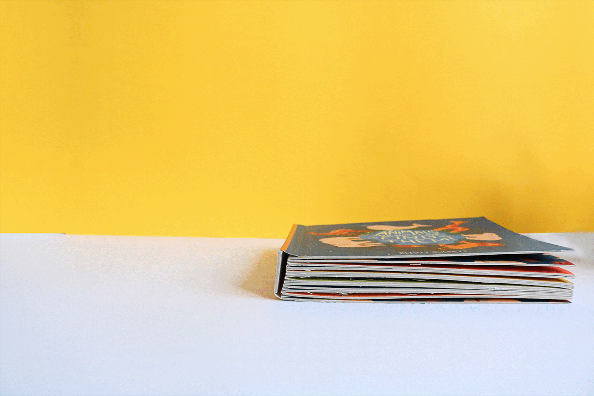

第一部・狹義相對論第一章 狹義相對論
1.1 光的幾何化、世界的幾何化
看 YouTube 影片時，YouTuber 活在二維的平面裡，加上一條播放時間軸，就成了三維時空。這就是翻頁書（flip book）：許多張二維照片完全重疊，每張只差一點點，快速翻過去就變成影片。所謂的時間軸，只是頁數，也許根本不存在時間。
光也在書裡：每翻一頁，光前進固定的距離。光速 \(c\) 只是「平面距離」與「頁數」之間的換算常數——頁數乘上 \(c\)，就是距離。這是光的幾何化。每翻一頁，任何東西最多只能走這麼遠。這道上限像一個被人寫死的參數——也許世界是虛擬的，寫死它，是怕它失控崩潰。
我們的三維空間，其實是一本立體的翻頁書（pop-up flip book）：每一頁不是一張照片，而是一整個三維世界。這是世界的幾何化。

Einstein 提出兩個假設：
相對性原理：物理定律在所有慣性基準（不加速的觀察者）中形式相同。
光速不變：真空中光速 \(c\) 對所有慣性觀察者都相同，與光源或觀察者的運動無關。
第二條是實驗事實（Michelson–Morley 實驗測不到任何方向的光速差異）。 它與「速度相加」的日常直覺矛盾，所以時間與空間的觀念必須修改。以下逐一算出要修改成什麼樣子。
1.2 時間膨脹：向車頂發射的光
電車地板有光源，向正上方的天花板鏡子發光，光反射回地板。地板到鏡子高度為 \(L\)。
車上基準：光直上直下，來回耗時 \(\dfrac{2L}{c}\)。
地上基準：光來回期間電車在移動，所以光走的是斜線，總路徑比 \(2L\) 長。 光速仍是 \(c\)，路徑較長，耗時就比 \(\dfrac{2L}{c}\) 長。
算出到底耗時多久。由上圖，光爬升 \(L\) 需時：
$$ \Delta{}^{\text{地}}t = \frac{L}{\sqrt{c^2-v^2}} = \frac{L}{c}\,\frac{1}{\sqrt{1-\left(\frac{v}{c}\right)^2}} $$車上經過 \(\dfrac{L}{c}\) 的時間，地上就經過它的 \(\dfrac{1}{\sqrt{1-\left(\frac{v}{c}\right)^2}}\) 倍。 這個因子之後不斷出現，記作：
$$ \boxed{\;\gamma \equiv \frac{1}{\sqrt{1-\left(\frac{v}{c}\right)^2}} \;>\; 1\;} $$同一個現象，地上基準測得的時間比車上基準長 \(\gamma\) 倍——運動中的時鐘走得慢。
1.3 長度收縮
列車以 \(v\) 掠過地面上相距 \({}^{\text{地}}L\) 的兩點。 速度＝長度／時間，而這個相對速度，車上與地上測得的大小必須相同：
$$ v = \frac{{}^{\text{地}}L}{\Delta{}^{\text{地}}t} = \frac{{}^{\text{車}}L}{\Delta{}^{\text{車}}t} $$「經過甲點」與「經過乙點」兩個事件都發生在車頭同一位置， 車上的鐘正是 1.2 節走得慢的那個：\(\Delta{}^{\text{車}}t = \dfrac{\Delta{}^{\text{地}}t}{\gamma}\)。 分母變小，分子必須跟著變小，比值才能不變：
$$ \boxed{\;{}^{\text{車}}L = \frac{{}^{\text{地}}L}{\gamma} = \sqrt{1-\left(\frac{v}{c}\right)^2}\; {}^{\text{地}}L\;} $$運動中的觀察者測地面的長度，縮短 \(\dfrac{1}{\gamma}\) 倍；由相對性原理，地上測運動中的列車也一樣短 （沿運動方向；垂直方向不變）。合併 1.2 與 1.3： 有相對速度，看對方在做慢動作，而且看扁他。
1.4 Lorentz 變換
事件在基準 1 的座標為 \(({}^{1}x,\ {}^{1}t)\)，在基準 2（以 \(v\) 前進）的座標為 \(({}^{2}x,\ {}^{2}t)\)。 用 1.3、1.2 的結論直接組出換算式。
第一式（長度收縮）：在基準 2 的時刻 \({}^{2}t\)，地面原點位於 \(-v\cdot{}^{2}t\)， 所以事件離地面原點的距離，用基準 2 的尺量是 \({}^{2}x + v\cdot{}^{2}t\)。 但這段距離在地面上的長度是 \({}^{1}x\)，而基準 2 看地面的長度縮短 \(\dfrac{1}{\gamma}\) 倍（1.3 節）：
$$ {}^{2}x + v\cdot{}^{2}t = \frac{{}^{1}x}{\gamma} \qquad\Longrightarrow\qquad {}^{1}x = \gamma\,({}^{2}x + v\cdot{}^{2}t) $$第二式（對稱性）：把時間乘上 \(c\) 寫成 \(c\cdot{}^{1}t\)，單位就是距離—— 時間和位置是同一種量，\(c\) 只是換算常數。第一式即
$$ {}^{1}x = \gamma\left({}^{2}x + \tfrac{v}{c}\cdot c\cdot{}^{2}t\right) $$光速不變說：\({}^{1}x = c\cdot{}^{1}t\) 與 \({}^{2}x = c\cdot{}^{2}t\) 是同一條光——\({}^{1}x\) 與 \(c\cdot{}^{1}t\) 地位完全對稱。 把第一式的 \({}^{1}x \leftrightarrow c\cdot{}^{1}t\)、\({}^{2}x \leftrightarrow c\cdot{}^{2}t\) 互換，式子必須照樣成立，直接得：
$$ c\cdot{}^{1}t = \gamma\left(c\cdot{}^{2}t + \tfrac{v}{c}\cdot {}^{2}x\right) $$（驗證：代入 \({}^{2}x = c\cdot{}^{2}t\)，兩式右邊相等，得 \({}^{1}x = c\cdot{}^{1}t\)——光在兩個基準都是光速。）
第二式除以 \(c\) 還原回 \({}^{1}t\)，整理：
$$ \boxed{\;{}^{1}x = \gamma\,({}^{2}x + v\cdot{}^{2}t), \qquad {}^{1}t = \gamma\left({}^{2}t + \frac{v}{c^2}\cdot{}^{2}x\right)\;} $$這就是Lorentz 變換。反變換把 \(v\) 換成 \(-v\)：
$$ {}^{2}x = \gamma\,({}^{1}x - v\cdot{}^{1}t), \qquad {}^{2}t = \gamma\left({}^{1}t - \frac{v}{c^2}\cdot{}^{1}x\right) $$1.2 的時間膨脹是特例：取 \({}^{2}x = 0\)，得 \({}^{1}t = \gamma\cdot{}^{2}t\)。 當 \(v \ll c\) 時 \(\gamma \to 1\)、\(\frac{v}{c^2}\cdot{}^{2}x \to 0\)，退回伽利略變換 \({}^{1}x = {}^{2}x + v\cdot{}^{1}t\)、\({}^{1}t = {}^{2}t\)。
1.5 新的速度合成則
物體從原點出發等速運動，基準 1 測得速度 \({}^{1}v = \dfrac{{}^{1}x}{{}^{1}t}\)， 基準 2 測得 \({}^{2}v = \dfrac{{}^{2}x}{{}^{2}t}\)，基準間速度為 \(v\)。將 Lorentz 變換代入：
$$ {}^{1}v = \frac{{}^{1}x}{{}^{1}t} = \frac{\gamma({}^{2}x + v\cdot{}^{2}t)}{\gamma\left({}^{2}t + \frac{v}{c^2}\cdot{}^{2}x\right)} = \frac{\frac{{}^{2}x}{{}^{2}t} + v}{1 + \frac{v}{c^2}\frac{{}^{2}x}{{}^{2}t}} $$ $$ \boxed{\;{}^{1}v = \frac{{}^{2}v + v}{1 + \dfrac{{}^{2}v\,v}{c^2}}\;} $$這條式子取代 \({}^{1}v = {}^{2}v + v\)。驗證三種情況：
日常速度：\({}^{2}v, v \ll c\) 時分母趨近 1，回到 \({}^{1}v = {}^{2}v + v\)。 日常生活察覺不到差異，理所當然。
光：代入 \({}^{2}v = c\)：
$$ {}^{1}v = \frac{c + v}{1 + \frac{v}{c}} = \frac{(c+v)\,c}{c + v} = c $$不論 \(v\) 多大，結果都是 \(c\)——光速不變被公式自動保證。
高速疊加：以 \(0.9c\) 行駛的電車上，把球以 \(0.9c\)（相對電車）向前丟。地上看：
$$ {}^{1}v = \frac{0.9c + 0.9c}{1 + 0.9^2} = \frac{1.8c}{1.81} \approx 0.994c $$怎麼疊都不會超過 \(c\)。
1.6 動量不守恆？
質量同為 \(m\) 的 A、B 以速率 \(v\) 相向飛行。把 A、B 看成一個整體，總質量 \(M\)；它的質心 C 是一個虛擬的點，不是實物。 左右對稱，C 靜止。
換到跟著 B 移動的基準（B 靜止）；\({}^{B}v_{A}\) 表示在 B 的基準裡量到的 A 的速度：
相對論之前，速度直接相加： \({}^{B}v_{A} = 2v\)、\({}^{B}v_{C} = v\)。整體的動量等於 A、B 的動量之和；用 \(p = mv\)：
$$ m\,(2v) = M\,v \qquad\Longrightarrow\qquad M = 2m $$動量相加，順便給出質量相加。但 1.5 節已經知道速度不能直接相加，真正的速度是
$$ {}^{B}v_{A} = \frac{2v}{1+\left(\frac{v}{c}\right)^2}\,, \qquad {}^{B}v_{C} = v $$代回：\(m\cdot{}^{B}v_{A} = Mv\)。若 \(M = 2m\)，左邊小於右邊，等號不成立。 我們選擇保住「整體的動量＝各部分的動量之和」——這只是人類的假設，不然沒有抓手——於是 \(p = mv\) 這個定義非修不可。
1.7 動量的修正
設修正後的動量為
$$ p = k(v)\, m v $$\(k\) 是所有物體共用的修正函數，\(k(0) = 1\)。 \(k\) 無單位，所以它只能依賴無單位的 \(\frac{v}{c}\)；\(v \ll c\) 時 \(k \approx 1\)，回到牛頓。 B 基準的動量相加式變成
$$ k({}^{B}v_{A})\, m\cdot{}^{B}v_{A} = k(v)\, M v \tag{1} $$缺 \(M\)。讓整個系統多帶一個縱向速度—— 換到往下以 \(u\) 移動的基準，所有東西多了向上的 \(u\)：
共同漂移 \(u\) 給每個縱向動量乘上同一個因子 \(k(u)\)，其餘由橫向速率決定：
$$ \begin{aligned} \text{A}&:\ k(u)\,k(v)\,mu\\ \text{B}&:\ k(u)\,k(v)\,mu\\ \text{C}&:\ k(u)\,k(0)\,Mu = k(u)\,Mu \end{aligned} $$縱向動量相加：
$$ k(u)\,k(v)\,mu + k(u)\,k(v)\,mu = k(u)\,Mu $$兩邊除以 \(k(u)\,u\)：
$$ 2\,k(v)\, m = M \tag{2} $$把 \({}^{B}v_{A} = \dfrac{2v}{1+\left(\frac{v}{c}\right)^2}\) 與 (2) 的 \(M = 2k(v)m\) 代入 (1)：
$$ k({}^{B}v_{A})\; m\;\frac{2v}{1+\left(\frac{v}{c}\right)^2} \;=\; k(v)\cdot 2k(v)m \cdot v $$兩邊除以 \(2mv\)：
$$ \frac{k({}^{B}v_{A})}{1+\left(\frac{v}{c}\right)^2} = k(v)^2 \qquad\Longrightarrow\qquad k({}^{B}v_{A}) = k(v)^2\left(1+\left(\tfrac{v}{c}\right)^2\right) \tag{3} $$還差一條。B 基準看到的是「A 以 \({}^{B}v_{A}\) 飛向靜止的 B，質心 C 以 \(v\) 前進」—— 對它重施故技：全體共同帶上縱向的 \(u\)，橫向照舊。
縱向動量相加：
$$ k(u)\,k({}^{B}v_{A})\,mu + k(u)\,k(0)\,mu = k(u)\,k(v)\,Mu $$兩邊除以 \(k(u)\,mu\)，再用 (2) 的 \(M = 2k(v)m\)：
$$ k({}^{B}v_{A}) + 1 = k(v)\,\frac{M}{m} = 2k(v)^2 \qquad\Longrightarrow\qquad k({}^{B}v_{A}) = 2k(v)^2 - 1 \tag{4} $$(3)、(4) 聯立，消去 \(k({}^{B}v_{A})\)：
$$ 2k(v)^2 - 1 = k(v)^2\left(1+\left(\tfrac{v}{c}\right)^2\right) \qquad\Longrightarrow\qquad k(v)^2\left(1-\left(\tfrac{v}{c}\right)^2\right) = 1 $$ $$ k(v) = \frac{1}{\sqrt{1-\left(\frac{v}{c}\right)^2}} = \gamma \qquad\Longrightarrow\qquad \boxed{\;p = \gamma m v\;} $$修正函數不多不少，正是 1.2 節的 \(\gamma\)。 順帶 (2) 說 \(M = 2\gamma m > 2m\)：整體的質量比 \(2m\) 大—— 動量相加保住了，質量相加沒有。
1.8 能量的修正
1.7 節的結尾：\(M = 2\gamma m\)，整體的質量不等於各部分的質量之和。這個 \(\gamma m\) 到底是啥？ 把 \(\gamma\) 逐項展開看看：
$$ \gamma = \frac{1}{\sqrt{1-\left(\frac{v}{c}\right)^2}} = 1 + \tfrac12\left(\tfrac{v}{c}\right)^2 + \tfrac38\left(\tfrac{v}{c}\right)^4 + \tfrac{5}{16}\left(\tfrac{v}{c}\right)^6 + \cdots $$ $$ \gamma m = m + \frac{\tfrac12 m v^2}{c^2} + \frac{\tfrac38 m v^4}{c^4} + \cdots $$第二項的分子是牛頓動能 \(\tfrac12 mv^2\)，卻整個被 \(c^2\) 除著——怪怪的。 那就兩邊乘上 \(c^2\)（一切都是人類的嘗試，不神聖）：
$$ \gamma m c^2 = mc^2 + \tfrac12 m v^2 + \tfrac38\, \frac{m v^4}{c^2} + \cdots $$順眼了：第二項正是牛頓動能，後面的項是高速修正（\(v \ll c\) 時小到可忽略）； 第一項與運動無關——物體光是存在，就帶著 \(mc^2\)。 於是 \(M = 2\gamma m\) 兩邊乘上 \(c^2\)，猜測這可能是能量：
$$ Mc^2 = \gamma m c^2 + \gamma m c^2 $$「動能＋一筆固定存款」——人類目前猜測，這個量就是能量：
$$ \boxed{\;E = \gamma m c^2\;} \qquad\qquad v = 0:\ \boxed{\;E_0 = mc^2\;} $$1.9 動量與能量的關係
手上兩條式子，都含著隨基準而變的 \(v\)：
$$ E = \gamma m c^2, \qquad p = \gamma m v $$把 \(v\) 消掉。平方相減，用 \(\gamma^2\left(1-\frac{v^2}{c^2}\right) = 1\)：
$$ E^2 - (pc)^2 = \gamma^2 m^2 c^4 - \gamma^2 m^2 v^2 c^2 = \gamma^2 m^2 c^4 \left(1 - \frac{v^2}{c^2}\right) = (mc^2)^2 $$ $$ \boxed{\;E^2 - (pc)^2 = (mc^2)^2\;} $$\(E\) 與 \(p\) 各自隨基準改變，但這個組合卻對所有基準都是同一差——\(mc^2\) 的平方。
改成相除，消掉的就是質量：
$$ \frac{E}{pc} = \frac{\gamma m c^2}{\gamma m v c} \qquad\Longrightarrow\qquad \boxed{\;\frac{E}{pc} = \frac{c}{v}\;} $$這兩條框起來的式子裡沒有 \(\gamma\)，所以連 \(v = c\) 都能用——比 \(E = \gamma mc^2\)、\(p = \gamma mv\) 更廣。 代 \(m = 0\) 進第一條：\(E = pc\)；再代進第二條：\(\frac{c}{v} = \frac{E}{pc} = 1\)—— 質量為零的粒子照樣有能量與動量，但被迫永遠以光速跑，這是否暗示就是光子？ 反過來，\(v = c \Rightarrow E = pc \Rightarrow m = 0\)：這是否暗示以光速跑的東西必定沒有質量？
低速檢查：把第一條開根號、逐項展開（\(\sqrt{1+x} = 1 + \tfrac12 x - \tfrac18 x^2 + \cdots\)）：
$$ E = mc^2\sqrt{1+\left(\tfrac{p}{mc}\right)^2} = mc^2 + \frac{p^2}{2m} - \frac{p^4}{8m^3c^2} + \cdots $$第二項正是牛頓動能的動量寫法 \(\dfrac{p^2}{2m}\)，其後是高速修正。
第二部・廣義相對論第二章 廣義相對論
2.1 複習：Doppler 效應
聲音在空氣中以 \(v\) 傳播。波源每秒發出 \(f_0\) 個波前，相鄰波前相距
$$ \lambda = \frac{v}{f_0} $$波源以 \(v_s\) 朝觀察者移動：相鄰波前發出相隔 \(\dfrac{1}{f_0}\)， 其間前一個波前走 \(\dfrac{v}{f_0}\)，波源前進 \(\dfrac{v_s}{f_0}\)：
$$ \lambda_s = \frac{v}{f_0} - \frac{v_s}{f_0} = \frac{v - v_s}{f_0} \qquad\Longrightarrow\qquad f = \frac{v}{\lambda_s} = \frac{v}{\dfrac{v - v_s}{f_0}} = f_0\,\frac{v}{v - v_s} $$觀察者以 \(v_o\) 朝波源移動：波前間距仍是 \(\lambda\)，但以 \(v + v_o\) 掠過觀察者：
$$ f = \frac{v + v_o}{\lambda} = f_0\,\frac{v + v_o}{v} $$兩者同時發生：觀察者以 \(v + v_o\) 掠過壓縮後的 \(\lambda_s\)：
$$ f = \frac{v + v_o}{\lambda_s} = f_0\,\frac{v + v_o}{v - v_s} $$遠離時 \(v_s \to -v_s\)、\(v_o \to -v_o\)。合併寫成（靠近取上號、遠離取下號）：
$$ \boxed{\; f = f_0\,\frac{v \pm v_o}{v \mp v_s} \;} $$2.2 加速的火箭：上下的鐘
火箭以加速度 \(a\) 向上加速，底到頂高 \(h\)。底部每隔 \(T_{\text{下}}\) 向上發一道光， 頂部每隔 \(T_{\text{上}}\) 收到一道。\(T_{\text{上}}\) 是多少？
【方法一】
火箭在加速，不是慣性基準——發光那一刻火箭速度為 \(v\)。 光飛到頂部需時 \(\Delta T\)：光走了 \(c\,\Delta T\)，頂部跑了 \(v\,\Delta T + \tfrac12 a\,\Delta T^2\)，兩者之差是 \(h\)：
$$ h = c\,\Delta T - v\,\Delta T - \tfrac12 a\,\Delta T^2 $$最後一項極小，丟掉：
$$ (c - v)\,\Delta T = h \qquad\Longrightarrow\qquad \Delta T = \frac{h}{c - v} $$這條式子在相對論裡成立嗎？速度不是不能直接相加？——1.5 的合成則管的是換基準： 同一個物體，基準 1 量到 \({}^{1}v\)、基準 2 量到 \({}^{2}v\)，兩者怎麼換。這裡沒有換基準： 光的位置 \(c\,\Delta T\)、頂部的位置 \(h + v\,\Delta T + \tfrac12 a\,\Delta T^2\)， 全是同一個慣性基準、同一套鐘尺量出來的座標，「光追上頂部」就是兩個座標相等，座標相減是純算術。 \(c - v\) 也不是任何東西的速度，是間距縮小的速率——這種量本來就可以超過 \(c\)（兩道光對開，間距以 \(2c\) 縮小，完全合法）。
這段時間頂部被加速，收到光時速度為 \(v + a\dfrac{h}{c - v}\)。
套 Doppler 公式——波源以 \(v\) 朝觀察者、觀察者以 \(v + a\dfrac{h}{c - v}\) 遠離：\(f = f_0\,\dfrac{c - v_o}{c - v_s}\)。 代 \(v_s = v\)、\(v_o = v + a\dfrac{h}{c - v}\)、\(f_0 = \dfrac{1}{T_{\text{下}}}\)、\(f = \dfrac{1}{T_{\text{上}}}\)：
$$ \frac{1}{T_{\text{上}}} = \frac{1}{T_{\text{下}}}\,\frac{c - v - a\dfrac{h}{c - v}}{c - v} = \frac{1}{T_{\text{下}}}\left(1 - \frac{ah}{(c - v)^2}\right) $$逐項展開 \(\dfrac{1}{1-x} = 1 + x + x^2 + \cdots\)：
$$ \frac{ah}{(c - v)^2} = \frac{ah}{c^2}\cdot\frac{1}{\left(1 - \frac{v}{c}\right)^2} = \frac{ah}{c^2}\left(1 + \frac{v}{c} + \left(\frac{v}{c}\right)^2 + \cdots\right)^2 = \frac{ah}{c^2} + 2\,\frac{ah}{c^2}\cdot\frac{v}{c} + \cdots $$第二項起都是 \(\dfrac{ah}{c^2}\) 再乘上 \(\dfrac{v}{c}\) 的次方——火箭速度太慢，全部丟掉：
$$ \frac{1}{T_{\text{上}}} = \frac{1}{T_{\text{下}}}\left(1 - \frac{ah}{c^2}\right) \qquad\Longrightarrow\qquad T_{\text{上}} = \frac{T_{\text{下}}}{1 - \dfrac{ah}{c^2}} $$逐項展開 \(\dfrac{1}{1-x} = 1 + x + x^2 + \cdots\)，留一次項：
$$ T_{\text{上}} = T_{\text{下}}\left(1 + \frac{ah}{c^2} + \left(\frac{ah}{c^2}\right)^2 + \cdots\right) \qquad\Longrightarrow\qquad \boxed{\; \frac{T_{\text{上}} - T_{\text{下}}}{T_{\text{下}}} = \frac{ah}{c^2} \;} $$【方法二】
不套 Doppler，直接追兩道光。第一道光需時 \(\dfrac{h}{c - v}\)（同上）； 第二道光晚 \(T_{\text{下}}\) 發出，火箭速度已是 \(v + a\,T_{\text{下}}\)，需時 \(\dfrac{h}{c - v - a\,T_{\text{下}}}\)。 第二道光晚 \(T_{\text{下}}\) 出發、又多了兩段飛行時間之差，頂部收到的間隔：
$$ T_{\text{上}} = T_{\text{下}} + \frac{h}{c - v - a\,T_{\text{下}}} - \frac{h}{c - v} = T_{\text{下}} + \frac{h\,(c - v) - h\,(c - v - a\,T_{\text{下}})}{(c - v - a\,T_{\text{下}})(c - v)} = T_{\text{下}} + \frac{a\,h\,T_{\text{下}}}{(c - v)(c - v - a\,T_{\text{下}})} $$ $$ \frac{T_{\text{上}} - T_{\text{下}}}{T_{\text{下}}} = \frac{ah}{(c - v)(c - v - a\,T_{\text{下}})} = \frac{ah}{c^2}\cdot\frac{1}{1 - \dfrac{v}{c}}\cdot\frac{1}{1 - \dfrac{v + a\,T_{\text{下}}}{c}} $$兩個因子各逐項展開 \(\dfrac{1}{1-x} = 1 + x + x^2 + \cdots\)：
$$ \frac{T_{\text{上}} - T_{\text{下}}}{T_{\text{下}}} = \frac{ah}{c^2}\left(1 + \frac{v}{c} + \left(\frac{v}{c}\right)^2 + \cdots\right)\left(1 + \frac{v + a\,T_{\text{下}}}{c} + \left(\frac{v + a\,T_{\text{下}}}{c}\right)^2 + \cdots\right) = \frac{ah}{c^2} + \frac{ah}{c^2}\cdot\frac{v}{c} + \frac{ah}{c^2}\cdot\frac{v + a\,T_{\text{下}}}{c} + \cdots $$第二項起都是 \(\dfrac{ah}{c^2}\) 再乘上火箭速度除以 \(c\)，丟掉：
$$ \frac{T_{\text{上}} - T_{\text{下}}}{T_{\text{下}}} = \frac{ah}{c^2} $$與方法一相同。
\(T_{\text{上}} - T_{\text{下}} > 0\)，所以 \(T_{\text{上}} > T_{\text{下}}\)。
上面已經到了第 10 秒了，下面怎麼才到了 8 秒，才剛傳來第 8 秒的時針反射光！
這與 1.2「運動中的鐘慢」不同——兩個鐘之間沒有相對速度——是加速度帶來的新機制。
對比的基準點在哪裡？取決於把「測量起點（原點）」設在火箭的哪裡。
1. 關鍵在於公式裡的那個「1」
$$ T_{\text{上}} = T_{\text{下}}\left(1 + \frac{ah}{c^2}\right) $$「1」完全等同於沒有加速度（\(a = 0\)，等速火箭）時的標準時間流速；\(\dfrac{ah}{c^2}\) 是加速度 \(a\) 與高度差 \(h\) 帶來的修正。 推導時以火箭底部為原點（\(h = 0\)），底部的公式就是
$$ T = T_{\text{標準}} \times (1 + 0) = T_{\text{標準}} $$有加速度的火箭底與沒有加速度的火箭底，鐘的走速（底片張數密度）一樣；頂部 \(h > 0\)，底片張數變多（時間變快）。
2. 如果把基準點改設在「火箭中心」呢？
原點可以自由選擇。火箭高 100 公尺，把正中間（50 公尺處）設為原點（\(h = 0\)）：中心的走速與無加速火箭底片張數一樣（時間流速一樣），頂部（100 公尺處，\(h = 50\)）底片張數變多（時間變快），底部（0 公尺處，\(h = -50\)）底片張數變少（時間變慢）。把基準原點設在哪裡，在物理學上稱為「局部慣性系」的選擇。
2.3 引力幾何化。人類的猜測：加速度＝重力
站在地面，腳底被地面頂著；站在 2.2 那艘以 \(a = g\) 加速的火箭裡，腳底一樣被地板頂著。關在艙裡，分不出兩者—— 人類於是猜測：加速度與重力是同一件事（等效原理，Einstein 1907）。這只是猜測，不然沒有抓手。
把 2.2 的 \(a\) 換成 \(g\)：
$$ \boxed{\; \frac{T_{\text{上}} - T_{\text{下}}}{T_{\text{下}}} = \frac{gh}{c^2} \;} $$高處的鐘比低處快——實驗事實：1960 年 Pound 與 Rebka 在 22.5 m 的塔裡用 Fe-57 原子核發出的光量到這個差，吻合到 10%； 之後從一萬公里高的衛星（1976，\(7\times10^{-5}\)）到 33 cm（2010）、1 mm 高的原子雲（2022），六十多年沒有一次偏離 \(\dfrac{gh}{c^2}\)。 GPS 衛星的鐘在高處每天比地面快 45 μs（運動的鐘慢 7 μs，淨快 38 μs），不修正，定位每天累積十公里誤差。
【引力幾何化的最簡例：光往下彎】
一道光水平前進，波前上下兩端高度差 \(h\)。以下端的鐘為準：下端過 1 秒，上端已經過了 \(1 + \dfrac{gh}{c^2}\) 秒，多 \(\dfrac{gh}{c^2}\) 秒。 兩端各自量到的光速都是 \(c\)，所以這 1 秒裡上端的光走了 \(c\left(1 + \dfrac{gh}{c^2}\right)\)，比下端多 \(c\,\dfrac{gh}{c^2}\)—— 波前上端跑得多、下端跑得少，整個波前向下轉。光線垂直於波前，所以光往下彎。
波前轉動的角速度＝上下端速度差除以 \(h\)：
$$ \frac{c\,\dfrac{gh}{c^2}}{h} = \frac{g}{c} $$每秒偏轉 \(\dfrac{g}{c}\)。一顆以速度 \(c\) 水平丟出的石頭，垂直速度每秒增加 \(g\)，方向每秒也偏 \(\dfrac{g}{c}\)——一模一樣。 推導裡沒有任何「力」，只用了不同高度的時間走速不同，光就往下彎。引力是否根本不是力，而是時空的形狀？——這是「引力幾何化」的猜測。
2.4 E = hν 的能量幾何化
翻書讓光宏觀上等速前進；但光其實是螺旋式前進——相位螺旋式變化。每翻幾頁書，螺旋一次。
從側面看螺旋，就是簡諧運動（simple harmonic motion），也就是彈簧：彈力位能與動能不斷互換，合起來是一個能量包。這個能量包對外作功時，人類觀察到的是電磁力；但也許電磁力根本不存在，只是時空的形狀造成的。
人類量測到的是： 光打在金屬上打出電子，電子的能量只看光每秒轉幾圈，與亮度無關（Lenard 1902 發現，Millikan 1916 量準）。 圓偏振光照在一片用細絲吊著的波片上，會把它扭轉（Beth 1936）：每顆光子帶著固定的角動量 \(\dfrac{h}{2\pi}\)。角動量固定，轉得越快，能量越多：
$$ E = \frac{h}{2\pi}\times 2\pi\nu = h\,\nu $$2.5 （未完工）
【質量能量化：沒有質量的質量】
兩道能量各為 \(E\) 的光反向對飛，關在一個無質量的盒子裡。盒子整體：能量 \(2E\)，動量 \(\dfrac{E}{c} - \dfrac{E}{c} = 0\)（1.9：光的 \(E = pc\)）。 代入 1.9 的 \(E^2 - (pc)^2 = (Mc^2)^2\)：
$$ (2E)^2 - 0 = (Mc^2)^2 \qquad\Longrightarrow\qquad M = \frac{2E}{c^2} $$裡面沒有任何有質量的東西，盒子卻有質量——推它會抗拒，放在地上會有重量。
這不是空想，是量得到的事實。質子由夸克與膠子組成：膠子沒有質量，三個夸克的靜止質量合計只佔質子質量的 1%，剩下的 99% 是關在裡面的運動能與場能（格點 QCD，2018）。 你身上絕大部分的重量，就是這種沒有質量的質量。
反過來的過程也量得到。質子與中子結合成氘核時，放出一顆能量 2.224 MeV 的光，氘核就比兩者相加輕了這麼多。 2005 年的實驗一邊用光的波長量能量、一邊用離子在磁場中的迴旋頻率量質量，兩邊核對 \(E = mc^2\)，差距不到 0.00004%。
【位能幾何化的最簡例：位能就是鐘的快慢】
一顆質量 \(m\) 的石頭抬高 \(h\)，位能多了 \(mgh\)。拆開來寫：
$$ mgh = mc^2\cdot\frac{gh}{c^2} $$\(mc^2\) 是 1.8 的靜止能量；\(\dfrac{gh}{c^2}\) 是 2.2 的結果，上端的鐘每秒比下端多走的秒數。石頭在高處的總能量：
$$ mc^2 + mgh = mc^2\left(1 + \frac{gh}{c^2}\right) $$括號裡正是高處鐘的走速（下端的鐘為 1）。靜止石頭的能量＝\(mc^2\) 乘上它所在處鐘的走速。
光往下彎、石頭有位能，用的是同一張時間地形圖。位能是否根本不在石頭裡，而是石頭所在處時間的快慢？——這是「位能幾何化」的猜測。
\(\dfrac{gh}{c^2}\) 是 2.2 丟掉高次項的結果。不丟，有兩個精確版本。
等加速的火箭：以火箭自己的尺量 \(h\)、以底部量到的加速度為 \(g\)，上下鐘的比值精確就是 \(1 + \dfrac{gh}{c^2}\)，一項都不必丟。四步。
一、把 1.4 的變換代入 \((c\cdot{}^{1}t)^2 - {}^{1}x^2\)：
$$ \begin{aligned} (c\cdot{}^{1}t)^2 - {}^{1}x^2 &= \gamma^2\left[\left(c\cdot{}^{2}t + \tfrac{v}{c}\cdot{}^{2}x\right)^2 - \left({}^{2}x + \tfrac{v}{c}\cdot c\cdot{}^{2}t\right)^2\right]\\ &= \gamma^2\left(1 - \tfrac{v^2}{c^2}\right)\left[(c\cdot{}^{2}t)^2 - {}^{2}x^2\right]\\ &= (c\cdot{}^{2}t)^2 - {}^{2}x^2 \end{aligned} $$換基準，這個差不變。
二、火箭底部的世界線取雙曲線 \({}^{1}x^2 - (c\cdot{}^{1}t)^2 = \left(\dfrac{c^2}{g}\right)^2\)。兩邊對 \({}^{1}t\) 微分：
$$ 2\cdot{}^{1}x\,\frac{d{}^{1}x}{d{}^{1}t} - 2c^2\cdot{}^{1}t = 0 \qquad\Longrightarrow\qquad v = \frac{c^2\cdot{}^{1}t}{{}^{1}x} $$再微分一次：
$$ \frac{dv}{d{}^{1}t} = \frac{c^2}{{}^{1}x} - \frac{c^2\cdot{}^{1}t\,v}{{}^{1}x^2} = \frac{c^2}{{}^{1}x^3}\left({}^{1}x^2 - c^2\cdot{}^{1}t^2\right) = \frac{c^2}{{}^{1}x^3}\cdot\frac{c^4}{g^2} $$\({}^{1}t = 0\) 時 \({}^{1}x = \dfrac{c^2}{g}\)、\(v = 0\)，代入得 \(\dfrac{dv}{d{}^{1}t} = g\)。由一，這條雙曲線在任何慣性基準看都是同一條；換到與火箭某一瞬間同速的基準，那一瞬間就是它的 \({}^{2}t = 0\)，加速度是 \(g\)。火箭每一瞬間都感覺到 \(g\)——這就是等加速。
三、與火箭某一瞬間同速 \(v\) 的基準，它的「同一時刻」是 \({}^{2}t = 0\)。由 1.4，\(c\cdot{}^{2}t = \gamma\left(c\cdot{}^{1}t - \tfrac{v}{c}\cdot{}^{1}x\right) = 0\)，即 \(c\cdot{}^{1}t = \tfrac{v}{c}\cdot{}^{1}x\)：一條過原點的直線。火箭那一點的 \(v = \dfrac{c^2\cdot{}^{1}t}{{}^{1}x}\) 正好落在這條線上。所以火箭每一瞬間的「同時線」都過同一個點：原點是轉軸，同時線像指針掃過。
四、火箭頂部在底部上方 \(h\)（火箭自己的尺）：世界線是同心的另一條雙曲線 \({}^{1}x^2 - (c\cdot{}^{1}t)^2 = \left(\dfrac{c^2}{g} + h\right)^2\)。它是底部那條以原點為中心放大 \(\dfrac{\frac{c^2}{g} + h}{\frac{c^2}{g}}\) 倍的圖形；同時線是過原點的直線，放大後還是自己。鐘自己走的時間：切成小段，每段在同速基準裡 \(\Delta({}^{2}x) = 0\)，由一，\((c\,\Delta({}^{2}t))^2 = (c\,\Delta({}^{1}t))^2 - (\Delta({}^{1}x))^2\)；全部座標放大幾倍，每一段的鐘時間就放大幾倍。所以兩條同時線之間：
$$ \frac{T_{\text{上}}}{T_{\text{下}}} = \frac{\dfrac{c^2}{g} + h}{\dfrac{c^2}{g}} = 1 + \frac{gh}{c^2} $$沒有近似。順帶：頂部感覺到的加速度是 \(\dfrac{c^2}{\frac{c^2}{g} + h} = \dfrac{g}{1 + \frac{gh}{c^2}}\)，比底部小。
真實的星球：地球的 \(g\) 隨高度變小，等加速火箭只能模擬地表附近一小段。整顆星球外面的鐘走速，本書推不出來——要解 Einstein 方程（Schwarzschild 1916），這裡借用結果。離質量 \(M\) 的星球中心 \(r\) 處，靜止的鐘的走速（以無限遠處的鐘為 1）：
$$ \sqrt{1 - \frac{2GM}{rc^2}} $$\(G\) 是牛頓的重力常數，\(\dfrac{GM}{r^2}\) 是牛頓的 \(g\)。靜止石頭的能量仍是 \(mc^2\) 乘上鐘的走速：
$$ E = mc^2\sqrt{1 - \frac{2GM}{rc^2}} $$逐項展開（\(\sqrt{1-x} = 1 - \tfrac12 x - \tfrac18 x^2 - \cdots\)）：
$$ E = mc^2 - \frac{GMm}{r} - \frac{G^2M^2m}{2\,r^2c^2} - \cdots $$第二項是牛頓的位能 \(-\dfrac{GMm}{r}\)，第三項起是牛頓沒有的修正。兩個高度相比：
$$ \frac{T_{\text{上}}}{T_{\text{下}}} = \sqrt{\frac{1 - \dfrac{2GM}{(r+h)\,c^2}}{1 - \dfrac{2GM}{rc^2}}} $$只留 \(h\) 的一次項、再丟掉 \(\dfrac{2GM}{rc^2}\)（地球表面是 \(1.4\times10^{-9}\)），回到 \(1 + \dfrac{GMh}{r^2c^2} = 1 + \dfrac{gh}{c^2}\)。鐘走速在 \(r = \dfrac{2GM}{c^2}\) 處歸零——那是黑洞的邊界。
【能量幾何化的最簡例：同一顆光，不同高度不同能量】
一顆石頭靜止在高 \(h\) 處，能量 \(mc^2\left(1 + \dfrac{gh}{c^2}\right)\)。放手，落到底部時速度 \(v\)，能量 \(\gamma mc^2\)。能量守恆（人類的假設）：
$$ \gamma mc^2 = mc^2\left(1 + \frac{gh}{c^2}\right) $$在底部把石頭整個變成光（正負電子相撞就是這樣變成光的），光的能量 \(\gamma mc^2\)。把光射向上端，在上端把光變回一顆靜止的石頭，要花 \(mc^2\)。若光到上端時能量還是 \(\gamma mc^2\)，就白賺 \(mgh\)，再放手、再來一次——永動機。要不白賺，光爬到上端的能量必須剛好是 \(mc^2\)：
$$ \frac{E_{\text{上}}}{E_{\text{下}}} = \frac{mc^2}{\gamma mc^2} = \frac{1}{1 + \dfrac{gh}{c^2}} = \frac{T_{\text{下}}}{T_{\text{上}}} $$同一顆光，往上爬，能量變少，比例正好是下端鐘走速比上端鐘走速 \(\dfrac{T_{\text{下}}}{T_{\text{上}}}\)。反過來讀：用下端的鐘量，上端那顆光的能量＝它在上端當地的能量 \(E_{\text{上}}\) 乘上上端鐘的走速 \(1 + \dfrac{gh}{c^2}\)，等於 \(E_{\text{下}}\)——守恆。上一小節的石頭是同一條規則：當地能量 \(mc^2\)，乘上鐘的走速。能量隨鐘的走速換算，同一個東西換到鐘走得快的地方，用基準鐘看能量就多——這是「能量幾何化」的猜測。
實驗：Pound 與 Rebka 1960 年量的正是這個——Fe-57 原子核發出的光爬 22.5 m，能量少了 \(\dfrac{gh}{c^2} = 2.5\times10^{-15}\)，吻合到 10%；1965 年 Pound 與 Snider 做到 1%。2.2 說上端每秒收到的節拍也少了同樣的比例：光的能量與頻率同比例變化，是否暗示光的能量正比於頻率？
【動能幾何化的最簡例：斜邊比直角邊】
1.2 的光鐘：地上基準看光走斜邊，車上基準看光走直角邊，斜邊比直角邊是 \(\dfrac{c}{\sqrt{c^2 - v^2}} = \gamma\)。以地面的鐘為準：車上的鐘走 1 秒，地面過了 \(\gamma\) 秒。1.8 的能量：
$$ E = \gamma mc^2 = mc^2 \times \frac{\text{斜邊}}{\text{直角邊}} $$動能是多出來的部分：
$$ E - mc^2 = mc^2\,(\gamma - 1) = mc^2 \times \frac{\text{斜邊} - \text{直角邊}}{\text{直角邊}} $$動能＝自己的鐘比地面的鐘慢了多少，乘上 \(mc^2\)。位能是「所在處的鐘」比基準快多少，動能是「自己的鐘」比所在處的鐘慢多少，都是鐘的比值。一顆在高 \(h\) 處以速度 \(v\) 運動的石頭，兩個比值相乘：
$$ E = mc^2\left(1 + \frac{gh}{c^2}\right)\gamma $$實驗：CERN 1977 年儲存環裡的緲子，動量由磁場定出 \(\gamma = 29.3\)，量到的壽命是靜止時的 29.3 倍，吻合到千分之二——自己的鐘慢了 29.3 倍，能量就是靜止時的 29.3 倍。
【質量幾何化的最簡例：同一支箭的長度】
1.9：\(E^2 - (pc)^2 = (mc^2)^2\)，對所有基準同一差。畫出來：橫軸 \(pc\)、縱軸 \(E\)，一顆粒子是一支從原點出發的箭。換基準，箭的高（\(E\)）與寬（\(pc\)）都變，箭頭沿雙曲線滑動，\(\text{高}^2 - \text{寬}^2\) 不變——這是時空幾何裡的「長度」：轉動一根尺，長度不變（\((c\cdot{}^{1}t)^2 - {}^{1}x^2\) 同一個模樣，見上文等加速火箭的第一步）。
質量＝箭的長度。能量＝箭的高（時間方向的分量），動量＝箭的寬（空間方向的分量），動能＝箭比自己的長度多出的高 \(E - mc^2\)。靜止時箭直立，高就是長 \(mc^2\)。光子 \(m = 0\)：長度為零的箭，貼著 \(E = pc\) 這條線，有高有寬，卻沒有長度——1.9 說它被迫永遠以光速跑。質量是不是根本就是一個「長度」？——這是「質量幾何化」的猜測。
【質量幾何化的最簡例：靜止的粒子是一個鐘】
de Broglie 1924 年的猜測：一顆靜止的粒子裡有一個以頻率 \(f\) 振動的東西，振動的能量與靜止能量是同一份：
$$ \text{Planck 常數} \times f = mc^2 \qquad\Longrightarrow\qquad m = \frac{\text{Planck 常數}}{c^2}\, f $$質量＝這個鐘走的快慢，乘上常數。電子的 \(f\) 是 \(1.2\times10^{20}\) Hz，銫原子是 \(3.0\times10^{25}\) Hz。
實驗：2013 年 Müller 團隊做出一個鐘，節拍直接來自銫原子的這個 \(f\)——用質量報時；同一套裝置反過來量微觀質量，精度 \(4\times10^{-9}\)。2019 年起，公斤不再是巴黎那塊金屬，而是由 Planck 常數（定為 \(6.62607015\times10^{-34}\) J·s）與 \(c\)、秒定義；SI 手冊把定義反解成 1 kg ＝ \(1.4755\times10^{40}\) × Planck 常數 × 銫原子鐘頻率 ÷ \(c^2\)——質量的定義就是頻率乘上常數。質量是不是根本就是一個頻率？——這也是「質量幾何化」的猜測。
【質量幾何化的最簡例：質量是時間地形的坡度】
上面說鐘的走速每升高一公尺多 \(\dfrac{g}{c^2}\)；地表 \(\dfrac{g}{c^2} = 1.1\times10^{-16}\) 每公尺。反過來：不丟石頭、不用秤，量兩個高度的鐘差就得到 \(g\)：
$$ g = c^2 \times \text{坡度} $$牛頓：\(g = \dfrac{GM}{r^2}\)，所以
$$ M = \frac{c^2 r^2}{G} \times \text{坡度} $$地球：坡度 \(1.1\times10^{-16}\) 每公尺、\(r = 6371\) km，得 \(M = 6.0\times10^{24}\) kg——用兩個鐘秤地球。質量在這裡不是「多少東西」，而是「周圍時間地形有多陡」。質量如何造出這個地形是 Einstein 方程的內容，本書推不出來，這裡只借了牛頓的 \(\dfrac{1}{r^2}\)。
實驗：2010 年 NIST 把兩個離子鐘中的一個抬高 33 cm，就量到坡度；2020 年東京晴空塔，兩台可搬運的光晶格鐘一台在地面、一台在 450 m 觀景台，量到 \(4.9\times10^{-14}\) 的鐘差，與 \(\dfrac{gh}{c^2}\) 吻合到 \(10^{-5}\)；用鐘量高度已成為大地測量的新方法。
【質量幾何化的最簡例：看不見方向上的動量】
一個猜測（Kaluza 1921、Klein 1926）：空間多一個維度，捲成周長 \(L\) 的小圓，小到看不見。
沿小圓繞一圈的波必須接回自己，周長是波長的整數倍：
$$ n\,\lambda = L \qquad (n = 0, \pm 1, \pm 2, \cdots) $$動量與波長成反比（de Broglie：動量＝Planck 常數／波長），所以沿小圓的動量只能是「Planck 常數／\(L\)」的整數倍，\(n = 0\) 是不繞的波。
一顆粒子在我們的三維空間裡靜止，卻沿著小圓跑：它的動量 \(p\) 全在我們看不見的方向。 設它在五維裡沒有質量，1.9 的 \(m = 0\) 給 \(E = pc\)；我們看不見 \(p\)，只看到一顆靜止、能量 \(E\) 的東西，照 1.8 讀成 \(E = mc^2\)：
$$ mc^2 = pc \qquad\Longrightarrow\qquad m = \frac{p}{c} = \frac{n \cdot \text{Planck 常數}}{L\,c} $$「靜止質量」＝隱藏維度裡的動量，整個由幾何（\(L\)）決定。
【電荷也是幾何？最簡例：同一個小圓上的動量】
電荷從哪來？同一張圖：Kaluza–Klein 說，沿小圓跑的動量就是我們叫作「電荷」的東西——只能是「Planck 常數／\(L\)」的整數倍，正負對應繞行的兩個方向，\(n = 0\) 不帶電。 「為什麼電荷都是同一單位的整數倍、為什麼有正有負」在這個猜測裡有了幾何答案，而且同一個 \(n\) 同時給出電荷與質量。 用 Klein 1926 年的換算，\(L\) 約 \(10^{-32}\) m，比原子核小十七個量級；代回上一小節的質量公式，\(n = 1\) 的粒子質量約 \(10^{17}\) GeV，與電子的 \(5\times10^{-4}\) GeV 差二十個量級——這個矛盾是 Kaluza–Klein 被擱置的主因；現代弦論保留了捲起來的維度，把電子當成 \(n = 0\) 的模式，質量另有來源。 另一個幾何猜測是 Misner 與 Wheeler 1957 年的「沒有電荷的電荷」：電場線穿過一條時空蟲洞，從外面看一端像正電荷、另一端像負電荷，其實哪裡都沒有電荷——但這種電荷可以是任意值，解釋不了量子化，Wheeler 自己後來放棄。 現代規範理論把電荷看成粒子在一個「內部小圓」上的繞數（Weyl 1929、Wu–Yang 1975）：也是幾何，只是那個圓不在我們的時空裡。
實驗：額外維度至今毫無證據——桌上重力實驗到 30 μm、LHC 到 \(10^{-19}\) m 以下都沒有；質子與電子的電荷精確相反到 \(10^{-21}\)（相對值）；標準模型把電荷當輸入，解釋不了為什麼量子化。
2.6 （未完工）
2.3 猜引力是時空的形狀，2.5 猜電荷是看不見的小圓上的動量。兩件事能不能用同一把尺量？這把尺是：拿一支箭頭繞一圈，途中始終不轉它，回來時它轉了多少。
【曲率：繞一圈回來差多少】
在平面上拿一支箭頭沿三角形走一圈，途中始終不轉它——回到起點，箭頭和出發時一模一樣。
在地球儀上做同一件事。箭頭從北極出發，指著前進方向，沿經線往南走到赤道；路線轉向東，箭頭不轉，仍指著南——變成指向路線的右側；沿赤道走四分之一圈，路線轉向北，箭頭仍指著南——變成指向身後；沿經線走回北極，箭頭指著剛剛走來的那條經線，和出發時差了 90°。
三角形的三個角都是 90°，內角和 270°，比平面多出 90°——正好是箭頭轉的角度。它等於三角形的面積除以半徑平方（Girard 1629）：
$$ \text{轉角} = \frac{\text{面積}}{R^2} = \frac{\tfrac18 \times 4\pi R^2}{R^2} = \frac{\pi}{2} = 90^\circ $$把東行那段縮成八分之一圈，面積減半，轉角也減半，變成 45°。平面上的三角形再大，轉角都是零；同樣面積的三角形，球越小，\(\dfrac{1}{R^2}\) 越大，轉得越多。\(\dfrac{1}{R^2}\) 就是球面的曲率。曲率不必用公式定義：繞一小圈回來，方向差了多少，再除以圈住的面積。
【引力：陀螺儀繞地球一圈】
在太空中，一路不轉的箭頭就是陀螺儀：沒有外力矩，轉軸自己不會轉。如果地球周圍的時空是平的，陀螺儀繞地球一圈回來，轉軸紋絲不動；如果時空是彎的，它就會像地球儀上的箭頭，回來時轉了一點。
2004 年，Gravity Probe B 把四顆陀螺儀送上繞過南北極的軌道，量了一年。廣義相對論預言：轉軸每年多轉 6.606 角秒（約 0.0018°），方向與繞行方向相同。量到每年 6.602 角秒，誤差約千分之三（Everitt 等人 2011）。這就是地球儀上的箭頭，只是地球儀換成了地球周圍的時空。
【電磁：電子的相位箭頭繞磁場一圈】
電子也帶著一支箭頭：2.4 的相位箭頭。讓電子分成上下兩路，繞過中間一小塊磁場，在另一側會合。磁場被超導體完全包住，電子走過的地方，磁場是零。
如果磁力只是一種「力」，電子沒碰到磁場，就不該受任何影響。但兩路會合時，兩支相位箭頭差了一個角度，只由被圍住的磁場決定（Aharonov 與 Bohm 1959 預言）：
$$ \text{轉角差} = \frac{q}{\hbar} \times \Phi $$\(q\) 是電荷，\(\Phi\) 是被圍住的磁場乘上面積（磁通），\(\hbar\) 是 Planck 常數除以 \(2\pi\)。1986 年 Tonomura 等人把磁場關在一個微米大小、外面包著超導體的環形磁鐵裡，用電子干涉量到了這個角度差（Tonomura 等人 1986）。
和地球儀並排：
| 繞一圈回來，箭頭轉了 | |
|---|---|
| 地球儀上的箭頭 | 曲率 × 面積 |
| 電子的相位箭頭 | \(\dfrac{q}{\hbar}\) × 磁場 × 面積 |
形式一模一樣：磁場扮演的正是曲率。不是地球儀的曲率，也不是時空的曲率，而是「時空每一點上的內部小圓（2.5），彼此怎麼接起來」的曲率（這個對應在數學上是嚴格的，吳大峻與楊振寧 1975）。電荷 \(q\) 決定箭頭對這個曲率轉得多快：帶兩份電，轉角加倍——正是 2.5 的「電荷＝繞小圓轉幾圈」。
【電荷為什麼是整數】
假設磁場有源頭——一顆磁單極，就像電荷之於電場。用一個球面把它包起來，讓電子的相位箭頭沿赤道繞一圈。這一圈圍住的磁通是多少？用北半球算，是穿過北半球的 \(\Phi_{\text{北}}\)；用南半球算，是穿過南半球的 \(\Phi_{\text{南}}\)，只是對南半球而言，繞的方向相反。
同一圈，兩種算法的轉角差了：
$$ \frac{q}{\hbar}\,\Phi_{\text{北}} - \left(-\frac{q}{\hbar}\,\Phi_{\text{南}}\right) = \frac{q}{\hbar}\left(\Phi_{\text{北}} + \Phi_{\text{南}}\right) = \frac{q}{\hbar}\,\Phi_{\text{全}} $$箭頭轉一整圈等於沒轉，所以兩種算法只准差整數圈：
$$ \frac{q}{\hbar}\,\Phi_{\text{全}} = 2\pi n \qquad\Longrightarrow\qquad q = n \times \frac{2\pi\hbar}{\Phi_{\text{全}}} $$只要宇宙中有一顆磁單極，所有電荷都必須是同一個單位的整數倍（Dirac 1931）。電荷確實是整數倍：質子與電子的電荷大小相等，差距小於電子電荷的 \(10^{-21}\)（Bressi 等人 2011）。但磁單極至今一顆也沒找到（MoEDAL 2022），所以這一步是有前提的推論。
整理：
| 箭頭 | 活在哪裡 | 繞一圈回來 | 實驗 |
|---|---|---|---|
| 地球儀上的箭頭 | 球面 | 轉了 面積 ÷ \(R^2\) | 幾何定理（Girard 1629） |
| 陀螺儀的轉軸 | 時空 | 每圈約 0.0012 角秒（每年 6.6 角秒） | Gravity Probe B 2011 |
| 電子的相位箭頭 | 內部小圓 | 轉了 \(\dfrac{q}{\hbar}\Phi\) | Tonomura 1986 |
引力與電磁力，在數學上是同一類東西：曲率。最明顯的差別是箭頭活在哪裡——陀螺儀活在時空裡，相位箭頭活在內部小圓上。如果那個小圓是空間真的多出來的一個方向（2.5），引力與電磁力是否就是同一個五維時空的曲率？這正是 Kaluza 1921 年的猜測；2.5 提過它的難題，至今也沒有任何實驗證據。
第三部・電磁學第三章 電磁學
3.1 磁、光、電磁學的起點：等速運動壓扁電場
在 \(q\) 基準裡，試驗電荷 \(q\)（質量 \(m\)）此刻（\({}^{q}t = 0\)）靜止，電荷 \(Q\) 一直以 \({}^{q}V\) 等速移動。\(Q\) 基準跟著 \(Q\) 移動。
實驗（Bucherer 1908、Bertozzi 1964）：在 \(Q\) 基準裡，不論 \(q\) 跑多快，都有：
$$ \begin{gathered} \frac{d{}^{Q}\vec p_{q}}{d{}^{Q}t} = q\cdot{}^{Q}\vec E\\[6pt] {}^{Q}\vec p_{q} = {}^{Q}\gamma_{q}\,m\cdot{}^{Q}\vec v_{q}\ \text{（1.7）},\qquad {}^{Q}\gamma_{q} = \frac{1}{\sqrt{1 - \dfrac{|{}^{Q}\vec v_{q}|^2}{c^2}}}\\[6pt] {}^{Q}E = \frac{Q}{4\pi\varepsilon_0\cdot{}^{Q}r^2}\ \text{（Coulomb；}\varepsilon_0\text{ 是真空電容率）} \end{gathered} $$換到 \(q\) 基準之前先問：這個世界根本就不存在什麼「力」，力其實只是動量的變化÷時間？
$$ F = \frac{dp}{dt} $$垂直方向（沿圖中的 \(y\) 軸）：
$$ \begin{aligned} &\frac{dy}{d{}^{q}t} = 0 = \frac{dy}{d{}^{Q}t},\qquad |{}^{Q}\vec v_{q}| = {}^{q}V\ \text{（1.3）}\\[6pt] &d{}^{Q}t = {}^{q}\gamma_{Q}\,d{}^{q}t\ \text{（1.2）},\qquad d{}^{Q}y = d{}^{q}y = dy\ \text{（1.3）}\\[6pt] &d{}^{q}p_{q\perp} = d\Big({}^{q}\gamma_{q}\,m\,\frac{dy}{d{}^{q}t}\Big) = \underbrace{{}^{q}\gamma_{q}}_{1}\,m\,d\frac{dy}{d{}^{q}t} + m\,\underbrace{\frac{dy}{d{}^{q}t}}_{0}\,d{}^{q}\gamma_{q} = m\,d\frac{dy}{d{}^{q}t}\\[6pt] &d{}^{Q}p_{q\perp} = d\Big({}^{Q}\gamma_{q}\,m\,\frac{dy}{d{}^{Q}t}\Big) = {}^{Q}\gamma_{q}\,m\,d\frac{dy}{d{}^{Q}t} + m\,\underbrace{\frac{dy}{d{}^{Q}t}}_{0}\,d{}^{Q}\gamma_{q} = {}^{Q}\gamma_{q}\,m\,d\frac{dy}{d{}^{Q}t}\\[6pt] &d\frac{dy}{d{}^{Q}t} = d\Big(\frac{dy}{d{}^{q}t}\cdot\frac{d{}^{q}t}{d{}^{Q}t}\Big) = \underbrace{\frac{d{}^{q}t}{d{}^{Q}t}}_{\frac{1}{{}^{q}\gamma_{Q}}}\,d\frac{dy}{d{}^{q}t} + \underbrace{\frac{dy}{d{}^{q}t}}_{0}\,d\frac{d{}^{q}t}{d{}^{Q}t} = \frac{1}{{}^{q}\gamma_{Q}}\,d\frac{dy}{d{}^{q}t}\\[6pt] &{}^{Q}F_{q\perp} = \frac{d{}^{Q}p_{q\perp}}{d{}^{Q}t} = \frac{\bcancel{{}^{Q}\gamma_{q}}\,m\,d\dfrac{dy}{d{}^{Q}t}}{\bcancel{{}^{q}\gamma_{Q}}\,d{}^{q}t} = \frac{m\,d\dfrac{dy}{d{}^{Q}t}}{d{}^{q}t} = \frac{m\,d\dfrac{dy}{d{}^{q}t}}{{}^{q}\gamma_{Q}\,d{}^{q}t} = \frac{{}^{q}F_{q\perp}}{{}^{q}\gamma_{Q}} \end{aligned} $$平行方向（沿 \(x\) 軸；\({}^{q}v_{q}\) 是 \(q\) 在 \(q\) 基準裡的速度，此刻 \({}^{q}v_{q} = 0\)）：
$$ \begin{aligned} &{}^{Q}v_{q} = \frac{{}^{q}v_{q} - {}^{q}V}{1 - \dfrac{{}^{q}v_{q}\cdot{}^{q}V}{c^2}}\ \text{（1.5，代入 }-\,{}^{q}V\text{）}\\[6pt] &\frac{d{}^{Q}v_{q}}{d{}^{q}v_{q}} = \frac{1\cdot\Big(1 - \dfrac{{}^{q}v_{q}\cdot{}^{q}V}{c^2}\Big) - \big({}^{q}v_{q} - {}^{q}V\big)\cdot\Big(-\dfrac{{}^{q}V}{c^2}\Big)}{\Big(1 - \dfrac{{}^{q}v_{q}\cdot{}^{q}V}{c^2}\Big)^2}\\[6pt] &\phantom{\frac{d{}^{Q}v_{q}}{d{}^{q}v_{q}}} = \frac{1 - \dfrac{{}^{q}V^2}{c^2}}{\Big(1 - \dfrac{{}^{q}v_{q}\cdot{}^{q}V}{c^2}\Big)^2} = 1 - \frac{{}^{q}V^2}{c^2} = \frac{1}{{}^{q}\gamma_{Q}^2}\\[6pt] &d{}^{Q}v_{q} = \frac{d{}^{q}v_{q}}{{}^{q}\gamma_{Q}^2}\\[6pt] &d|{}^{Q}\vec v_{q}|^2 = d\Big({}^{Q}v_{q}^2 + \Big(\frac{dy}{d{}^{Q}t}\Big)^2\Big) = 2\cdot{}^{Q}v_{q}\,d{}^{Q}v_{q} + 2\,\underbrace{\frac{dy}{d{}^{Q}t}}_{0}\,d\frac{dy}{d{}^{Q}t} = 2\cdot{}^{Q}v_{q}\,d{}^{Q}v_{q}\\[6pt] &d{}^{Q}\gamma_{q} = d\frac{1}{\sqrt{1 - \dfrac{|{}^{Q}\vec v_{q}|^2}{c^2}}} = -\tfrac{1}{2}\underbrace{\Big(1 - \frac{|{}^{Q}\vec v_{q}|^2}{c^2}\Big)^{-\frac{3}{2}}}_{{}^{Q}\gamma_{q}^3}\Big(-\frac{d|{}^{Q}\vec v_{q}|^2}{c^2}\Big) = \frac{{}^{Q}\gamma_{q}^3}{c^2}\cdot{}^{Q}v_{q}\,d{}^{Q}v_{q}\\[6pt] &d{}^{Q}p_{q/\mkern-5mu/} = d\big({}^{Q}\gamma_{q}\,m\cdot{}^{Q}v_{q}\big) = m\,\big({}^{Q}\gamma_{q}\,d{}^{Q}v_{q} + {}^{Q}v_{q}\,d{}^{Q}\gamma_{q}\big)\\[6pt] &\phantom{d{}^{Q}p_{q/\mkern-5mu/}} = m\,\Big({}^{Q}\gamma_{q} + {}^{Q}v_{q}\cdot\frac{{}^{Q}\gamma_{q}^3}{c^2}\cdot{}^{Q}v_{q}\Big)\,d{}^{Q}v_{q} = {}^{Q}\gamma_{q}^3\,m\,\Big(\frac{1}{{}^{Q}\gamma_{q}^2} + \frac{{}^{Q}v_{q}^2}{c^2}\Big)\,d{}^{Q}v_{q}\\[6pt] &\phantom{d{}^{Q}p_{q/\mkern-5mu/}} = {}^{Q}\gamma_{q}^3\,m\,\Big(1 - \bcancel{\frac{{}^{Q}v_{q}^2}{c^2}} + \bcancel{\frac{{}^{Q}v_{q}^2}{c^2}}\Big)\,d{}^{Q}v_{q} = {}^{Q}\gamma_{q}^3\,m\,d{}^{Q}v_{q}\\[6pt] &d{}^{q}p_{q/\mkern-5mu/} = d\big({}^{q}\gamma_{q}\,m\cdot{}^{q}v_{q}\big) = \underbrace{{}^{q}\gamma_{q}}_{1}\,m\,d{}^{q}v_{q} + m\,\underbrace{{}^{q}v_{q}}_{0}\,d{}^{q}\gamma_{q} = m\,d{}^{q}v_{q}\\[6pt] &{}^{Q}F_{q/\mkern-5mu/} = \frac{d{}^{Q}p_{q/\mkern-5mu/}}{d{}^{Q}t} = \frac{{}^{Q}\gamma_{q}^3\,m\,d{}^{Q}v_{q}}{{}^{q}\gamma_{Q}\,d{}^{q}t} = \frac{\bcancel{{}^{Q}\gamma_{q}^3}\,m\,d{}^{q}v_{q}}{\bcancel{{}^{q}\gamma_{Q}^3}\,d{}^{q}t} = \frac{m\,d{}^{q}v_{q}}{d{}^{q}t} = {}^{q}F_{q/\mkern-5mu/} \end{aligned} $$\(q\) 基準的電場：\(q\) 此刻在 \(q\) 基準裡靜止，所以 \({}^{q}\vec F_{q} = q\cdot{}^{q}\vec E\) 就是 \(q\) 基準電場的定義；在 \(Q\) 基準裡，實驗給出 \({}^{Q}\vec F_{q} = q\cdot{}^{Q}\vec E\)。
$$ {}^{q}E_{\perp} = {}^{q}\gamma_{Q}\cdot{}^{Q}E_{\perp},\qquad {}^{q}E_{/\mkern-5mu/} = {}^{Q}E_{/\mkern-5mu/} $$ $$ \begin{aligned} {}^{q}E_{\perp} &= \frac{Q}{4\pi\varepsilon_0\cdot{}^{Q}r^2}\cdot\frac{r_{\perp}}{{}^{Q}r}\cdot\bbox[2px,border:1.5px solid #83C167]{{}^{q}\gamma_{Q}}\\[6pt] &= \frac{Q}{4\pi\varepsilon_0\Big[\big(\underbrace{{}^{q}\gamma_{Q}\cdot{}^{q}x_{Q}}_{{}^{Q}x_{Q}}\big)^2 + r_{\perp}^2\Big]}\cdot\frac{r_{\perp}}{\sqrt{\left({}^{q}\gamma_{Q}\cdot{}^{q}x_{Q}\right)^2 + r_{\perp}^2}}\cdot{}^{q}\gamma_{Q}\\[8pt] {}^{q}E_{/\mkern-5mu/} &= \frac{Q}{4\pi\varepsilon_0\cdot{}^{Q}r^2}\cdot\frac{-{}^{Q}x_{Q}}{{}^{Q}r} = \frac{Q}{4\pi\varepsilon_0\left[\left({}^{q}\gamma_{Q}\cdot{}^{q}x_{Q}\right)^2 + r_{\perp}^2\right]}\cdot\frac{-\,{}^{q}\gamma_{Q}\cdot{}^{q}x_{Q}}{\sqrt{\left({}^{q}\gamma_{Q}\cdot{}^{q}x_{Q}\right)^2 + r_{\perp}^2}} \end{aligned} $$ $$ \frac{{}^{q}E_{\perp}}{{}^{q}E_{/\mkern-5mu/}} = \frac{r_{\perp}}{-\,{}^{q}x_{Q}} $$電場從 \(Q\) 此刻的位置筆直向外，但被壓成一張餅（每個方向都取同樣的距離 \({}^{q}r\)）：
一整條等速移動的線電荷：每一段都以 \({}^{q}V\) 移動，\(q\) 基準裡的線密度是 \({}^{q}\lambda\)；\(Q\) 基準跟著線電荷移動。每一段代入：
| \(Q\) | \({}^{q}x_{Q}\) | 代入得到 |
|---|---|---|
| \({}^{q}\lambda\,d{}^{q}x\) | \({}^{q}x\) | \(d{}^{q}E_{\perp}\)、\(d{}^{q}E_{/\mkern-5mu/}\) |
電場只由 \(q\) 基準裡的線密度 \({}^{q}\lambda\) 決定，和線電荷跑多快無關（包括靜止，\({}^{q}V = 0\)）。
3.2 磁就是電！Ampère's law 的來源
這一節只用靜電學和第一章的相對論，算出通電導線對運動電荷的磁力（Purcell 1965）。
【方法一】
地面基準：導線裡有兩排電荷：正電荷的線密度是 \(\lambda\)，以 \(u\) 向右移動；負電荷的線密度是 \(-\lambda\)，以 \(u\) 向左移動。導線不帶電，電流是：
$$ I = 2\lambda u $$距離導線 \(r\) 處，電荷 \(q\) 以 \(v\) 向右移動（\(v < u\)）。導線不帶電，所以 \(q\) 不受電力。
\(q\) 基準：跟著 \(q\) 以 \(v\) 向右移動，\(q\) 此刻靜止。由 1.5 的速度合成（基準間速度代入 \(-v\)），正電荷以 \(u_+\) 向右、負電荷以 \(u_-\) 向左移動：
$$ u_\pm = \frac{u \mp v}{1 \mp \dfrac{uv}{c^2}} $$\(u_-\) 比 \(u_+\) 大。由 1.3，跑得越快排得越密；設電荷靜止時的線密度是 \(\lambda_0\)：
$$ \lambda = \gamma\,\lambda_0, \qquad \lambda_\pm = \pm\,\gamma_\pm\,\lambda_0 \qquad \left(\gamma = \frac{1}{\sqrt{1 - \frac{u^2}{c^2}}},\ \ \gamma_\pm = \frac{1}{\sqrt{1 - \frac{u_\pm^2}{c^2}}}\right) $$代入 \(u_\pm\)：
$$ 1 - \frac{u_\pm^2}{c^2} = \frac{\left(1 \mp \frac{uv}{c^2}\right)^2 - \frac{(u \mp v)^2}{c^2}}{\left(1 \mp \frac{uv}{c^2}\right)^2} $$分子展開後，含 \(uv\) 的兩項互相抵消：
$$ \begin{aligned} \left(1 \mp \tfrac{uv}{c^2}\right)^2 - \tfrac{(u \mp v)^2}{c^2} &= 1 \mp \tfrac{2uv}{c^2} + \tfrac{u^2v^2}{c^4} - \tfrac{u^2}{c^2} \pm \tfrac{2uv}{c^2} - \tfrac{v^2}{c^2}\\ &= 1 - \tfrac{u^2}{c^2} - \tfrac{v^2}{c^2} + \tfrac{u^2v^2}{c^4} = \left(1 - \tfrac{u^2}{c^2}\right)\left(1 - \tfrac{v^2}{c^2}\right) \end{aligned} $$開根號、取倒數：
$$ \gamma_\pm = \gamma\,\frac{1 \mp \dfrac{uv}{c^2}}{\sqrt{1 - \dfrac{v^2}{c^2}}} $$兩排加起來（\(\gamma\lambda_0 = \lambda\)）：
$$ \begin{aligned} \lambda_{\text{淨}} = \lambda_+ + \lambda_- = \lambda_0\,(\gamma_+ - \gamma_-) &= \gamma\lambda_0\,\frac{\left(1 - \frac{uv}{c^2}\right) - \left(1 + \frac{uv}{c^2}\right)}{\sqrt{1 - \frac{v^2}{c^2}}}\\ &= -\frac{2\lambda u v}{c^2\sqrt{1 - \frac{v^2}{c^2}}} \end{aligned} $$地面基準裡不帶電的導線，在 \(q\) 基準裡帶負電。帶電長直線的電場是 \(\dfrac{\lambda_{\text{淨}}}{2\pi\varepsilon_0 r}\)（Gauss 定律），所以靜止的 \(q\) 受到電力：
$$ {}^{q}F = q\,\frac{\lambda_{\text{淨}}}{2\pi\varepsilon_0 r} = -\frac{\lambda u}{\pi\varepsilon_0 c^2}\,\frac{qv}{r\sqrt{1 - \frac{v^2}{c^2}}} $$負號表示吸引。換回地面基準之前先問：這個世界根本就不存在什麼「力」，力其實只是動量的變化÷時間？
$$ F = \frac{dp}{dt} $$\(y\) 是垂直 \(\perp\) 於導線之座標軸。討論 \(q\) 在 \(q\) 基準靜止的瞬間：
$$ \begin{aligned} &\frac{d{}^{q}y}{d{}^{q}t} = 0 = \frac{d{}^{\text{地}}y}{d{}^{\text{地}}t} \;\Rightarrow\; {}^{q}\gamma = 1,\quad {}^{\text{地}}\gamma = \frac{1}{\sqrt{1 - \dfrac{v^2}{c^2}}}\\[4pt] &d{}^{\text{地}}t = {}^{\text{地}}\gamma\,d{}^{q}t\ \text{（1.2）},\quad d{}^{\text{地}}y = d{}^{q}y = dy\ \text{（1.3）}\\[4pt] &d{}^{q}p_{\perp} = d\Big({}^{q}\gamma m\,\frac{dy}{d{}^{q}t}\Big) = {}^{q}\gamma m\,d\frac{dy}{d{}^{q}t} + m\,\underbrace{\frac{dy}{d{}^{q}t}}_{0}\,d{}^{q}\gamma = m\,d\frac{dy}{d{}^{q}t}\\[4pt] &d{}^{\text{地}}p_{\perp} = d\Big({}^{\text{地}}\gamma m\,\frac{dy}{d{}^{\text{地}}t}\Big) = {}^{\text{地}}\gamma m\,d\frac{dy}{d{}^{\text{地}}t} + m\,\underbrace{\frac{dy}{d{}^{\text{地}}t}}_{0}\,d{}^{\text{地}}\gamma = {}^{\text{地}}\gamma m\,d\frac{dy}{d{}^{\text{地}}t}\\[4pt] &{}^{\text{地}}F = \frac{d{}^{\text{地}}p_{\perp}}{d{}^{\text{地}}t} = \frac{{}^{\text{地}}\gamma m\,d\dfrac{dy}{d{}^{\text{地}}t}}{{}^{\text{地}}\gamma\,d{}^{q}t} = \frac{m\,d\dfrac{dy}{{}^{\text{地}}\gamma\,d{}^{q}t}}{d{}^{q}t} = \frac{{}^{q}F}{{}^{\text{地}}\gamma} = -\frac{\lambda u}{\pi\varepsilon_0 c^2}\,\frac{qv}{r}\\[4pt] &I = 2\lambda u \;\Rightarrow\; {}^{\text{地}}F = -\frac{2\lambda u}{2\pi\varepsilon_0 c^2}\,\frac{qv}{r} = -\,qv\left(\frac{\dfrac{1}{\varepsilon_0 c^2}\,I}{2\pi r}\right) \end{aligned} $$括號裡正是長直導線的磁場；這就是 Lorentz 力（電荷 × 速度 × 磁場）。在 \(q\) 基準裡，\(q\) 的動量被電力改變；在地面基準裡，導線不帶電，\(q\) 的動量卻同樣在改變，我們稱之為磁力。磁力是否根本不是一種力，而只是時空的長度收縮（1.3）與時間膨脹（1.2）？
【方法二】
真實的金屬導線裡，正離子不動，只有自由電子移動。
地面基準：正電荷靜止，線密度是 \(\lambda\)；負電荷的線密度是 \(-\lambda\)，以 \(u\) 向左移動。導線不帶電，電流是：
$$ I = \lambda u $$電荷 \(q\) 同樣在距離導線 \(r\) 處以 \(v\) 向右移動。
\(q\) 基準：跟著 \(q\) 跑。正電荷以 \(v\) 向左移動，由 1.3 變密：
$$ \lambda_+ = \frac{\lambda}{\sqrt{1 - \frac{v^2}{c^2}}} $$負電荷的運動和方法一相同，靜止時的線密度是 \(\dfrac{\lambda}{\gamma}\)；代入方法一的 \(\gamma_-\)：
$$ \lambda_- = -\,\gamma_-\,\frac{\lambda}{\gamma} = -\,\gamma\,\frac{1 + \frac{uv}{c^2}}{\sqrt{1 - \frac{v^2}{c^2}}}\cdot\frac{\lambda}{\gamma} = -\,\frac{\lambda\left(1 + \frac{uv}{c^2}\right)}{\sqrt{1 - \frac{v^2}{c^2}}} $$加起來：
$$ \lambda_{\text{淨}} = \lambda_+ + \lambda_- = \frac{\lambda - \lambda\left(1 + \frac{uv}{c^2}\right)}{\sqrt{1 - \frac{v^2}{c^2}}} = -\,\frac{\lambda u v}{c^2\sqrt{1 - \frac{v^2}{c^2}}} = -\,\frac{I v}{c^2\sqrt{1 - \frac{v^2}{c^2}}} $$負電荷多了因子 \(1 + \dfrac{uv}{c^2}\)，所以導線帶負電。用 \(I\) 寫出的結果和方法一（\(I = 2\lambda u\)）完全相同，以下步驟也相同：
$$ {}^{q}F = q\,\frac{\lambda_{\text{淨}}}{2\pi\varepsilon_0 r} = -\,\frac{qIv}{2\pi\varepsilon_0 c^2\, r\sqrt{1 - \frac{v^2}{c^2}}} $$ $$ {}^{\text{地}}F = \frac{{}^{q}F}{{}^{\text{地}}\gamma} = -\,\frac{qIv}{2\pi\varepsilon_0 c^2\, r} = -\,qv\left(\frac{\dfrac{1}{\varepsilon_0 c^2}\,I}{2\pi r}\right) $$磁力只取決於電流 \(I\)，和導線裡是哪一種電荷在移動無關。
3.3 磁就是電！Biot-Savart law 的來源
在 × 處放電荷 \(q\)，速度 \({}^{\text{地}}v\) 平行於 \(d{}^{\text{地}}\vec\ell\)。其餘的導線換成假想的無限長直導線（虛線），導線裡的電荷都一直等速：
每一顆電荷恰好算到一次；每一段在任何基準裡都是同一批電荷；\(r_{\perp}\) 在各基準裡相同（1.3）。
$$ {}^{\text{地}}r^2 = {}^{\text{地}}r_{/\mkern-5mu/}^2 + r_{\perp}^2,\qquad \sin{}^{\text{地}}\theta = \frac{r_{\perp}}{{}^{\text{地}}r} $$被壓扁的電場（3.1）：
\(q\) 基準：
兩段分別代入被壓扁的電場（\({}^{q}\lambda_{\pm}\)：3.2 方法二）：
| \(Q\) | \({}^{q}V\) | \({}^{q}x_{Q}\) | \({}^{q}\gamma_{Q}\) | 代入得到 | |
|---|---|---|---|---|---|
| ⊕ 段 | \({}^{q}\lambda_{+}\,d{}^{q}\ell_{+}\) | \({}^{q}u_{+}\) | \({}^{q}x_{+}\) | \({}^{q}\gamma_{+}\) | \(d{}^{q}E_{\perp+}\) |
| ⊖ 段 | \({}^{q}\lambda_{-}\,d{}^{q}\ell_{-}\) | \({}^{q}u_{-}\) | \({}^{q}x_{-}\) | \({}^{q}\gamma_{-}\) | \(d{}^{q}E_{\perp-}\) |
兩段的電場加起來（\({}^{q}\lambda_{+} + {}^{q}\lambda_{-} = {}^{q}\lambda_{\text{淨}}\)，3.2）：
$$ \begin{gathered} d{}^{q}E_{\perp} = \frac{{}^{q}\lambda_{\text{淨}}\,d{}^{\text{地}}\ell\,\sin{}^{\text{地}}\theta}{4\pi\varepsilon_0\cdot{}^{\text{地}}r^2}\\[8pt] {}^{q}\lambda_{\text{淨}} = -\,\frac{{}^{\text{地}}\gamma_{q}\cdot{}^{\text{地}}I\cdot{}^{\text{地}}v}{c^2}\ \text{（3.2）},\qquad {}^{\text{地}}\gamma_{q} = \frac{1}{\sqrt{1 - \dfrac{{}^{\text{地}}v^2}{c^2}}} \end{gathered} $$地面基準：每一段都是同一批電荷，所以 3.2 的換算對每一段都成立：地面基準裡垂直於導線的力，等於 \(q\) 基準裡垂直於導線的力除以 \({}^{\text{地}}\gamma_{q}\)。
$$ d{}^{\text{地}}F_\perp = \frac{q\,d{}^{q}E_\perp}{{}^{\text{地}}\gamma_{q}} = -\,q\cdot{}^{\text{地}}v\cdot\underbrace{\frac{\dfrac{1}{\varepsilon_0 c^2}\cdot{}^{\text{地}}I\,d{}^{\text{地}}\ell\,\sin{}^{\text{地}}\theta}{4\pi\cdot{}^{\text{地}}r^2}}_{\text{Biot-Savart Law}} $$負號表示吸引。
Biot-Savart Law 是大學「靜磁學」的最底層邏輯，有了 Biot-Savart Law 就可以建構整個「靜磁學」。也許世界上根本不存在19世紀以來所認知的磁力，磁只是電在另一個基準裡的樣子。
3.4 （未完工）
【跟速度有關的那一部份力，就是所謂的磁力】
在地面基準裡，電荷 \(Q\) 一直以 \({}^{\text{地}}u\) 向右等速移動，試驗電荷 \(q\) 此刻以 \({}^{\text{地}}v\) 沿同一方向移動。\(Q\) 基準跟著 \(Q\) 移動，\(q\) 基準跟著 \(q\) 移動。
垂直方向（3.1）：
$$ {}^{\text{地}}F_{q\perp} = \frac{{}^{q}F_{q\perp}}{{}^{\text{地}}\gamma_{q}},\qquad {}^{Q}F_{q\perp} = \frac{{}^{q}F_{q\perp}}{{}^{q}\gamma_{Q}} \qquad\Longrightarrow\qquad {}^{\text{地}}F_{q\perp} = \frac{{}^{q}\gamma_{Q}}{{}^{\text{地}}\gamma_{q}}\cdot{}^{Q}F_{q\perp} $$用地面基準的速度寫出 \({}^{q}\gamma_{Q}\)：
$$ \begin{aligned} \frac{1}{{}^{q}\gamma_{Q}^2} &= 1 - \frac{{}^{q}V^2}{c^2} = 1 - \frac{\big({}^{\text{地}}u - {}^{\text{地}}v\big)^2}{c^2\Big(1 - \dfrac{{}^{\text{地}}u\cdot {}^{\text{地}}v}{c^2}\Big)^2}\\[6pt] &= \frac{\Big(1 - \dfrac{{}^{\text{地}}u\cdot {}^{\text{地}}v}{c^2}\Big)^2 - \dfrac{\big({}^{\text{地}}u - {}^{\text{地}}v\big)^2}{c^2}}{\Big(1 - \dfrac{{}^{\text{地}}u\cdot {}^{\text{地}}v}{c^2}\Big)^2}\\[6pt] &= \frac{1 - \bcancel{\dfrac{2\cdot{}^{\text{地}}u\cdot {}^{\text{地}}v}{c^2}} + \dfrac{{}^{\text{地}}u^2\cdot{}^{\text{地}}v^2}{c^4} - \dfrac{{}^{\text{地}}u^2}{c^2} + \bcancel{\dfrac{2\cdot{}^{\text{地}}u\cdot {}^{\text{地}}v}{c^2}} - \dfrac{{}^{\text{地}}v^2}{c^2}}{\Big(1 - \dfrac{{}^{\text{地}}u\cdot {}^{\text{地}}v}{c^2}\Big)^2}\\[6pt] &= \frac{1 - \dfrac{{}^{\text{地}}u^2}{c^2} - \dfrac{{}^{\text{地}}v^2}{c^2} + \dfrac{{}^{\text{地}}u^2\cdot{}^{\text{地}}v^2}{c^4}}{\Big(1 - \dfrac{{}^{\text{地}}u\cdot {}^{\text{地}}v}{c^2}\Big)^2}\\[6pt] &= \frac{\Big(1 - \dfrac{{}^{\text{地}}u^2}{c^2}\Big)\Big(1 - \dfrac{{}^{\text{地}}v^2}{c^2}\Big)}{\Big(1 - \dfrac{{}^{\text{地}}u\cdot {}^{\text{地}}v}{c^2}\Big)^2}\\[6pt] &= \frac{1}{{}^{\text{地}}\gamma_{Q}^2\cdot{}^{\text{地}}\gamma_{q}^2\cdot\Big(1 - \dfrac{{}^{\text{地}}u\cdot {}^{\text{地}}v}{c^2}\Big)^2}\\[6pt] {}^{q}\gamma_{Q} &= {}^{\text{地}}\gamma_{Q}\cdot{}^{\text{地}}\gamma_{q}\cdot\Big(1 - \frac{{}^{\text{地}}u\cdot {}^{\text{地}}v}{c^2}\Big)\qquad\Big(1 - \frac{{}^{\text{地}}u\cdot {}^{\text{地}}v}{c^2} > 0\Big) \end{aligned} $$代入：\({}^{\text{地}}E\) 是地面基準裡靜止的電荷所受的力 ÷ 電荷；地面基準扮演 3.1 的 \(q\) 基準：
$$ {}^{Q}F_{q\perp} = q\cdot{}^{Q}E_{\perp}\ \text{（3.1 的實驗）},\qquad {}^{Q}E_{\perp} = \frac{{}^{\text{地}}E_{\perp}}{{}^{\text{地}}\gamma_{Q}}\ \text{（3.1）} $$ $$ \begin{aligned} {}^{\text{地}}F_{q\perp} &= \frac{{}^{\text{地}}\gamma_{Q}\cdot\bcancel{{}^{\text{地}}\gamma_{q}}\cdot\Big(1 - \dfrac{{}^{\text{地}}u\cdot {}^{\text{地}}v}{c^2}\Big)}{\bcancel{{}^{\text{地}}\gamma_{q}}}\cdot q\cdot{}^{Q}E_{\perp}\\[6pt] &= \bcancel{{}^{\text{地}}\gamma_{Q}}\cdot\Big(1 - \frac{{}^{\text{地}}u\cdot {}^{\text{地}}v}{c^2}\Big)\cdot q\cdot\frac{{}^{\text{地}}E_{\perp}}{\bcancel{{}^{\text{地}}\gamma_{Q}}}\\[6pt] &= \underbrace{q\cdot{}^{\text{地}}E_{\perp}}_{\text{電力}} + \underbrace{\Big(-\,q\cdot{}^{\text{地}}v\cdot\frac{{}^{\text{地}}u}{c^2}\cdot{}^{\text{地}}E_{\perp}\Big)}_{\text{磁力}} \end{aligned} $$磁場：
$$ {}^{\text{地}}B \overset{\text{定義}}{=} \frac{{}^{\text{地}}u}{c^2}\cdot{}^{\text{地}}E_{\perp} \qquad\Longrightarrow\qquad {}^{\text{地}}F_{q\perp} = q\cdot\Big({}^{\text{地}}E_{\perp} - {}^{\text{地}}v\cdot{}^{\text{地}}B\Big) $$平行方向（3.1）：
$$ {}^{\text{地}}F_{q/\mkern-5mu/} = {}^{q}F_{q/\mkern-5mu/} = {}^{Q}F_{q/\mkern-5mu/} = q\cdot{}^{Q}E_{/\mkern-5mu/} = q\cdot{}^{\text{地}}E_{/\mkern-5mu/} $$合起來（\(\times\) 是外積；這裡只推導了 \(q\) 沿 \(x\) 軸移動的情形）：
$$ {}^{\text{地}}\vec B = \frac{{}^{\text{地}}\vec u\times{}^{\text{地}}\vec E}{c^2},\qquad {}^{\text{地}}\vec F_{q} = q\cdot\Big({}^{\text{地}}\vec E + {}^{\text{地}}\vec v\times{}^{\text{地}}\vec B\Big)\ \text{（Lorentz 力）} $$這個推導竟然還不需要用到 Coulomb 定律：不論 \(Q\) 基準裡的電場是不是 \(\dfrac{Q}{4\pi\varepsilon_0\cdot{}^{Q}r^2}\)，結果都一樣。磁場，是僅次於「時間」的最大 workaround，也許根本不存在磁場。大費周章，先用 \({}^{\text{地}}\vec u\) 與 \({}^{\text{地}}\vec E\) 的外積造出 \({}^{\text{地}}\vec B\)，再用 \({}^{\text{地}}\vec u\) 與 \({}^{\text{地}}\vec B\) 的外積，繞了一圈，又回到 \(-\,{}^{\text{地}}\vec E_{\perp}\) 的方向：
$$ \begin{gathered} {}^{\text{地}}\vec u\times\left({}^{\text{地}}\vec u\times{}^{\text{地}}\vec E\right) = -\,{}^{\text{地}}u^2\cdot{}^{\text{地}}\vec E_{\perp}\\[8pt] {}^{\text{地}}\vec v\times{}^{\text{地}}\vec B = {}^{\text{地}}\vec v\times\frac{{}^{\text{地}}\vec u\times{}^{\text{地}}\vec E}{c^2} = -\,\frac{{}^{\text{地}}v\cdot{}^{\text{地}}u}{c^2}\cdot{}^{\text{地}}\vec E_{\perp}\ \text{（補充：}{}^{\text{地}}\vec v\text{ 與 }{}^{\text{地}}\vec u\text{ 同方向）} \end{gathered} $$磁力終究只是 \({}^{\text{地}}E\) 的一部分，這不是脫褲子放屁嗎？所謂的磁場，只是人類用來描述指南針與鐵粉排列這些現象的說法而已。
而且，人類的單位還選錯了。1.1 說過，\(c\) 只是「距離」與「頁數」之間的換算常數；如果時間和距離用同一種單位來量（\(c = 1\)；下面用德文尖角體（Fraktur）表示這種單位下的量），就不會出現 \(c^2\) 這樣的係數：
$$ \begin{gathered} {}^{\text{地}}\vec{\mathfrak u} = \frac{{}^{\text{地}}\vec u}{c},\qquad {}^{\text{地}}\vec{\mathfrak v} = \frac{{}^{\text{地}}\vec v}{c},\qquad {}^{\text{地}}\vec{\mathfrak B} = c\cdot{}^{\text{地}}\vec B\\[8pt] {}^{\text{地}}\vec{\mathfrak B} = {}^{\text{地}}\vec{\mathfrak u}\times{}^{\text{地}}\vec E,\qquad {}^{\text{地}}\vec F_{q} = q\cdot\Big({}^{\text{地}}\vec E + {}^{\text{地}}\vec{\mathfrak v}\times{}^{\text{地}}\vec{\mathfrak B}\Big) \end{gathered} $$【再度推導出 Ampère's Law】
3.2 的方法二裡，導線中的電子以速度 \({}^{\text{地}}u\) 向左移動，正離子靜止。電子產生的電場和正離子產生的電場互相抵消，所以導線外沒有電場；但是電子在運動，所以它們會產生磁場。把 \({}^{\text{地}}B = \dfrac{{}^{\text{地}}u}{c^2}\cdot{}^{\text{地}}E_\perp\) 用在電子上：電子的線密度大小是 \({}^{\text{地}}\lambda\)；根據 3.1，線電荷的電場和它跑多快無關，所以電子在距離 \(r_{\perp}\) 處的電場，大小和同樣密度的靜止電荷一樣，是 \(\dfrac{{}^{\text{地}}\lambda}{2\pi\varepsilon_0 r_{\perp}}\)。因此：
$$ {}^{\text{地}}B = \frac{{}^{\text{地}}u}{c^2}\cdot{}^{\text{地}}E_{\perp} = \frac{{}^{\text{地}}u}{c^2}\cdot\frac{{}^{\text{地}}\lambda}{2\pi\varepsilon_0 r_{\perp}} = \frac{\dfrac{1}{\varepsilon_0c^2}\cdot{}^{\text{地}}\lambda\cdot{}^{\text{地}}u}{2\pi r_{\perp}} = \frac{\dfrac{1}{\varepsilon_0c^2}\cdot{}^{\text{地}}I}{2\pi r_{\perp}} $$【再度推導出 Biot-Savart Law】
求 × 處一小段導線 \(d{}^{\text{地}}\ell\) 產生的磁場。正離子靜止，不產生磁場；電子照 3.3 在 \(\ominus\) 基準裡切段：
被壓扁的電場（3.1，把 \(q\) 基準換成地面基準）：電子段在 × 處的電場垂直分量：
$$ \begin{aligned} d{}^{\text{地}}E_{\perp-} &= \frac{{}^{\text{地}}\lambda\,d{}^{\text{地}}\ell_{-}}{4\pi\varepsilon_0\left[\left({}^{\text{地}}\gamma_{-}\cdot {}^{\text{地}}x_{-}\right)^2 + r_{\perp}^2\right]}\cdot\frac{r_{\perp}}{\sqrt{\left({}^{\text{地}}\gamma_{-}\cdot {}^{\text{地}}x_{-}\right)^2 + r_{\perp}^2}}\cdot{}^{\text{地}}\gamma_{-}\\[6pt] &= \frac{{}^{\text{地}}\lambda\,\big(\underbrace{{}^{\text{地}}\gamma_{-}\cdot d{}^{\text{地}}\ell_{-}}_{d{}^{\text{地}}\ell}\big)}{4\pi\varepsilon_0\Big[\big(\underbrace{{}^{\text{地}}\gamma_{-}\cdot {}^{\text{地}}x_{-}}_{-\,{}^{\text{地}}r_{/\mkern-5mu/}}\big)^2 + r_{\perp}^2\Big]}\cdot\frac{r_{\perp}}{\sqrt{\left({}^{\text{地}}\gamma_{-}\cdot {}^{\text{地}}x_{-}\right)^2 + r_{\perp}^2}}\\[6pt] &= \frac{{}^{\text{地}}\lambda\,d{}^{\text{地}}\ell}{4\pi\varepsilon_0\cdot{}^{\text{地}}r^2}\cdot\frac{r_{\perp}}{{}^{\text{地}}r} = \frac{{}^{\text{地}}\lambda\,d{}^{\text{地}}\ell\,\sin{}^{\text{地}}\theta}{4\pi\varepsilon_0\cdot{}^{\text{地}}r^2} \end{aligned} $$磁場（\({}^{\text{地}}B = \dfrac{{}^{\text{地}}u}{c^2}\cdot{}^{\text{地}}E_{\perp}\)；\({}^{\text{地}}I = {}^{\text{地}}\lambda\cdot{}^{\text{地}}u\)，3.3）：
$$ d{}^{\text{地}}B = \frac{{}^{\text{地}}u}{c^2}\cdot d{}^{\text{地}}E_{\perp-} = \frac{{}^{\text{地}}u}{c^2}\cdot\frac{{}^{\text{地}}\lambda\,d{}^{\text{地}}\ell\,\sin{}^{\text{地}}\theta}{4\pi\varepsilon_0\cdot{}^{\text{地}}r^2} = \underbrace{\frac{\dfrac{1}{\varepsilon_0 c^2}\cdot{}^{\text{地}}I\,d{}^{\text{地}}\ell\,\sin{}^{\text{地}}\theta}{4\pi\cdot{}^{\text{地}}r^2}}_{\text{Biot-Savart Law}} $$【電力線並不存在】
首先，力不存在。3.1 說過，力只是動量隨時間的變化；Coulomb 在 1785 年用扭秤量到的 \(\dfrac{Q\,q}{4\pi\varepsilon_0\cdot{}^{Q}r^2}\)，也只是 \(q\) 的動量每秒改變多少。這一個式子是大學「靜電學」的最底層邏輯：有了它，就可以建構整個「靜電學」；再加上相對論，連「靜磁學」也建構得出來（3.3）。
可是，為什麼偏偏是 \({}^{Q}r^2\)？想像 \(Q\) 的影響力像燈泡的光，向四面八方均勻地散開。走到距離 \({}^{Q}r\) 的地方，它攤在一整個球面上；距離加倍，球面就變成四倍大，同樣多的影響力攤得更薄，每一小塊只分到四分之一。\(Q\) 的影響力並沒有變弱，只是越來越稀薄：
十九世紀的 Faraday 沒有受過數學訓練，卻在磁鐵旁撒上鐵粉，看見鐵粉排成一條條的曲線。他把這些曲線叫做「力線」，並且相信它們真的存在。Gauss 則把它寫成數學：穿過一個封閉曲面的力線數目（電通量），只看曲面裡面有多少電荷。後來 Maxwell（1855）把 Faraday 的力線寫成方程式，十年後寫出了整套電磁方程式（1865）。
可是，電力線也是人想出來的，也許根本不存在；也許真正存在的是時空的變形，只是剛好和這些假想的線吻合。就像地圖用等高線描述地形：等高線越密，山坡越陡；可是走上山，地上並沒有一條白色的等高線。
Gauss 定律（\(Q\) 基準：\(Q\) 靜止）：把一個封閉曲面切成許多小塊。一小塊的面積是 \(d{}^{Q}A\)，它朝外的方向和 \({}^{Q}\vec E\) 夾角 \(\alpha\)，到 \(Q\) 的距離是 \({}^{Q}r\)。從 \(Q\) 看出去，這一小塊和半徑 1 的球面上的一小塊，被同一個細錐切下：
\(Q\) 在曲面裡面：細錐繞一整圈，剛好把半徑 1 的球面切一遍，加起來就是它的面積 \(4\pi\)（細錐穿出比穿進多一次）。\(Q\) 在曲面外面：每一個細錐穿進幾次，就穿出幾次，\(\cos\alpha\) 一負一正，剛好抵消：
$$ \oint d{}^{Q}\Phi_E = \frac{Q}{4\pi\varepsilon_0}\cdot 4\pi = \frac{Q}{\varepsilon_0}\ \text{（}Q\text{ 在裡面）},\qquad \oint d{}^{Q}\Phi_E = 0\ \text{（}Q\text{ 在外面）} $$許多靜止的電荷：每一顆的電通量直接相加，曲面外面的電荷都貢獻零，只剩曲面裡面的電荷 \(Q_{\text{內}}\)：
$$ \oint\vec E\cdot d\vec A = \frac{Q_{\text{內}}}{\varepsilon_0}\ \text{（Gauss 定律，Maxwell 方程之一）} $$微分形式：在空間中一點 \((x, y, z)\) 取一個小盒子，三邊是 \(dx\)、\(dy\)、\(dz\)；\(\rho\) 是那裡的電荷密度（每單位體積的電荷），所以盒子裡的電荷是 \(\rho\,dx\cdot dy\cdot dz\)。電場從左面進來、從右面出去：
（\(\dfrac{\partial E_x}{\partial x}\)：只讓 \(x\) 變、\(y\) 和 \(z\) 不動時，\(E_x\) 的變化率。）六個面加起來就是盒子的電通量；由 Gauss 定律，它等於盒子裡的電荷除以 \(\varepsilon_0\)：
$$ \Big(\frac{\partial E_x}{\partial x} + \frac{\partial E_y}{\partial y} + \frac{\partial E_z}{\partial z}\Big)\,dx\cdot dy\cdot dz = \frac{\rho\,dx\cdot dy\cdot dz}{\varepsilon_0} $$兩邊同除以 \(dx\cdot dy\cdot dz\)，並且把 \(\nabla = \Big(\dfrac{\partial}{\partial x}, \dfrac{\partial}{\partial y}, \dfrac{\partial}{\partial z}\Big)\) 和 \(\vec E\) 的內積記作 \(\nabla\cdot\vec E\)：
$$ \nabla\cdot\vec E = \frac{\partial E_x}{\partial x} + \frac{\partial E_y}{\partial y} + \frac{\partial E_z}{\partial z} = \frac{\rho}{\varepsilon_0}\ \text{（Gauss 定律的微分形式）} $$【磁力線並不存在】
現在沿著一個繞著導線的封閉的圈，計算 \(\oint{}^{\text{地}}\vec B\cdot d{}^{\text{地}}\vec\ell\)；圈上各點到導線的距離 \(r_{\perp}\) 可以不同。磁場沿著以導線為圓心的圓周方向，所以圈上每一小段只有沿著圓周方向的部分有貢獻；如果這一小段對導線張開的角度是 \(d\varphi\)，它沿著圓周方向的長度就是 \(r_{\perp}\,d\varphi\)，所以：
$$ {}^{\text{地}}\vec B\cdot d{}^{\text{地}}\vec\ell = \frac{\mu_0\cdot{}^{\text{地}}I}{2\pi r_{\perp}}\times r_{\perp}\,d\varphi = \frac{\mu_0\cdot{}^{\text{地}}I}{2\pi}\,d\varphi $$距離 \(r_{\perp}\) 又被約掉了。如果圈包住導線，繞一圈的角度加起來是 \(2\pi\)；如果圈沒有包住導線，角度先增加、再減少，加起來是零。所以：
$$ \oint {}^{\text{地}}\vec B\cdot d{}^{\text{地}}\vec\ell = \begin{cases} \mu_0\cdot{}^{\text{地}}I & \text{（圈包住導線）}\\[4pt] 0 & \text{（圈沒有包住導線）} \end{cases} $$這就是 Ampère 定律，也就是第四條方程在電場不隨時間改變時的樣子。它和第一步的 Gauss 定律是同一個道理：場隨距離減弱的比例，正好被面積（或長度）隨距離增加的比例抵消。彎曲的導線裡，電子在轉彎處有加速度，嚴格來說已經超出等速運動電荷的範圍，那要用到第八步的假設四；不過彎曲導線的磁場，Biot、Savart 與 Ampère 在 1820 年已經用實驗量過。
【第六步：Faraday 定律】
（一）導體在磁場中運動。在長直導線旁邊，平行於導線放兩條軌道，分別距離導線 \(a\) 和 \(b\)；再把一根垂直於導線的金屬桿架在兩條軌道上，讓它以速度 \({}^{\text{地}}v\) 沿著導線的方向滑動。桿子裡的電荷跟著桿子以 \({}^{\text{地}}v\) 移動，方向和導線平行，所以第三步的結果可以直接使用：每個電荷都受到沿著桿子方向的磁力 \(q\cdot{}^{\text{地}}v\cdot{}^{\text{地}}B\)。把每一小段上的力除以電荷，再乘上這一小段的長度，然後沿著桿子加起來，就是推動電流的電動勢 \({}^{\text{地}}\mathcal{E}\)（\(\dfrac{1}{r_{\perp}}\) 的反導函數是 \(\ln r_{\perp}\)）：
$$ {}^{\text{地}}\mathcal{E} = \int_a^b {}^{\text{地}}v\cdot{}^{\text{地}}B\,dr_{\perp} = {}^{\text{地}}v\int_a^b \frac{\mu_0\cdot{}^{\text{地}}I}{2\pi r_{\perp}}\,dr_{\perp} = {}^{\text{地}}v\cdot\frac{\mu_0\cdot{}^{\text{地}}I}{2\pi}\ln\frac{b}{a} $$另一方面，桿子、兩條軌道和軌道另一端的接線，圍成一個長方形的圈。桿子每秒移動 \({}^{\text{地}}v\)，這個圈沿著導線方向的長度就每秒增加 \({}^{\text{地}}v\)。穿過圈的磁通量，是圈沿著導線方向的長度乘上 \(\int_a^b {}^{\text{地}}B\,dr_{\perp}\)，也就是乘上 \(\dfrac{\mu_0\cdot{}^{\text{地}}I}{2\pi}\ln\dfrac{b}{a}\)，所以它每秒增加：
$$ \frac{d{}^{\text{地}}\Phi_B}{d{}^{\text{地}}t} = {}^{\text{地}}v\cdot\frac{\mu_0\cdot{}^{\text{地}}I}{2\pi}\ln\frac{b}{a} $$兩者的大小相等：電動勢等於磁通量的變化率。電動勢推動的電流，方向總是使它自己產生的磁場去抵抗磁通量的變化（Lenz 定律）；把這個方向記成負號，就寫成 \({}^{\text{地}}\mathcal{E} = -\dfrac{d{}^{\text{地}}\Phi_B}{d{}^{\text{地}}t}\)。
（二）換到桿子的基準。在桿子自己的基準裡，桿子的電荷是靜止的，所以磁力不可能推動它們。可是電流一定還在，因為圈裡有沒有電流（例如接線會不會發熱），是每個基準都同意的事。那麼，推動電荷的是什麼？3.2 已經回答：在跟著桿子跑的基準裡，導線裡正負電荷的密度不再相等，導線帶了電，它產生的電場沿著桿子推動電荷。同一個電動勢，在一個基準裡來自磁力，在另一個基準裡來自電力。Einstein 在 1905 年那篇相對論論文的開頭，談的正是這件事：磁鐵不動而導體運動，和導體不動而磁鐵運動，產生的電流相同，但是當時的理論卻用兩種不同的原因解釋；相對論說，兩者只是同一件事從兩個基準來看。
（三）磁場隨時間改變。如果改成導線朝著一個靜止的線圈移動，線圈裡的磁場就會隨時間改變。在導線的基準裡，這是線圈朝著導線移動，線圈的電荷受到磁力，所以線圈上有電動勢；而有沒有電流，是每個基準都同意的事。在線圈的基準裡，線圈的電荷是靜止的，只有電場能推動它們，所以線圈上一定出現一個繞圈的電場；它繞一圈的總和等於磁通量的變化率，不過這種運動方向的完整計算要用到 3.5（見下文）。這就是第三條方程：
$$ \oint \vec E\cdot d\vec\ell = -\frac{d\Phi_B}{dt} $$它修改了第一步「靜止電荷的電場繞一圈總和是零」：電荷一旦運動，電場就可以繞圈。如果運動電荷只是帶著原本的 Coulomb 電場一起移動、沒有被壓扁，而磁場仍然是 \(\dfrac{{}^{\text{地}}\vec u\times{}^{\text{地}}\vec E}{c^2}\)，那麼它仍然會滿足第一、二、四條方程，卻會違反這一條，差別和 \(\dfrac{{}^{\text{地}}u^2}{c^2}\) 成正比；所以 Faraday 定律正是長度收縮留下的痕跡。嚴格驗證（三）需要電場與磁場在任意方向上的完整變換，而這個變換要用到 3.5 的動量變換。
（四）沒有任何東西在動。變壓器裡的線圈都不動，只是一個線圈的電流隨時間改變，另一個線圈就產生電動勢（Faraday 1831）。電流改變，代表電荷在加速，這已經超出等速運動電荷的範圍，所以需要第八步的假設四；變壓器和電子感應加速器的運作，正是這個假設的實驗證據。
【第七步：位移電流——一個電荷穿過圓環】
第五步的 Ampère 定律只看電流。現在讓一個電荷 \(Q\) 以速度 \({}^{\text{地}}u\) 沿著一個半徑為 \(r_{\perp}\) 的圓環的軸線，向右穿過這個圓環。電荷在圓環左邊時，沒有任何電流穿過圓環所圍的圓盤；可是電荷在運動，所以圓環上處處都有磁場。以圓盤中心為原點，\({}^{\text{地}}x_{Q}\) 是電荷此刻的位置，電荷在圓盤左邊時 \({}^{\text{地}}x_{Q}\) 是負的。圓環上每一點到軸線的距離都是 \(r_{\perp}\)，所以 3.1 的結果（把 \(q\) 基準換成地面基準）就是圓環上電場的垂直分量；再用第三步的 \({}^{\text{地}}B = \dfrac{{}^{\text{地}}u}{c^2}\cdot{}^{\text{地}}E_\perp\) 算出磁場，然後沿著圓環繞一圈：
$$ \begin{aligned}{}^{\text{地}}E_{\perp} &= \frac{Q}{4\pi\varepsilon_0\left[\left({}^{\text{地}}\gamma_{Q}\cdot {}^{\text{地}}x_{Q}\right)^2 + r_{\perp}^2\right]}\cdot\frac{r_{\perp}}{\sqrt{\left({}^{\text{地}}\gamma_{Q}\cdot {}^{\text{地}}x_{Q}\right)^2 + r_{\perp}^2}}\cdot{}^{\text{地}}\gamma_{Q}\ \text{（3.1）}\\[8pt] \oint{}^{\text{地}}\vec B\cdot d{}^{\text{地}}\vec\ell &= 2\pi r_{\perp}\times\frac{{}^{\text{地}}u}{c^2}\cdot{}^{\text{地}}E_{\perp} = \frac{\mu_0\,Q\cdot{}^{\text{地}}\gamma_{Q}\cdot{}^{\text{地}}u\,r_{\perp}^2}{2\left[\left({}^{\text{地}}\gamma_{Q}\cdot {}^{\text{地}}x_{Q}\right)^2 + r_{\perp}^2\right]^{\frac{3}{2}}}\end{aligned} $$它從來不是零，可是穿過圓盤的電流幾乎一直是零。只看電流的 Ampère 定律，在這裡錯了。
缺的是什麼？電荷逐漸靠近時，穿過圓盤的電通量逐漸增加。在 \(Q\) 基準裡，電荷靜止，電場就是 Coulomb 電場，而電荷到圓盤的距離是 \(-\,{}^{\text{地}}\gamma_{Q}\cdot{}^{\text{地}}x_{Q}\)。從電荷看過去，圓盤的邊緣張開一個半角為 \(\alpha\) 的圓錐；用第二步的環帶，把 \(k\) 從 \(\cos\alpha\) 加到 1，這個圓錐佔全部方向的比例是 \(\dfrac{1 - \cos\alpha}{2}\)，其中 \(\cos\alpha = \dfrac{-\,{}^{\text{地}}\gamma_{Q}\cdot{}^{\text{地}}x_{Q}}{\sqrt{\left({}^{\text{地}}\gamma_{Q}\cdot{}^{\text{地}}x_{Q}\right)^2 + r_{\perp}^2}}\)。穿過圓盤的電通量只用到沿著運動方向的電場分量；3.1 說這個分量在兩個基準裡相同，而圓盤垂直於運動方向，圓盤上各點在兩個基準裡是同時的，面積也不收縮，所以地面基準裡穿過圓盤的電通量和 \(Q\) 基準相同。電荷在圓盤左邊時：
$$ {}^{\text{地}}\Phi_E = \frac{Q}{2\varepsilon_0}\left(1 + \frac{{}^{\text{地}}\gamma_{Q}\cdot{}^{\text{地}}x_{Q}}{\sqrt{\left({}^{\text{地}}\gamma_{Q}\cdot{}^{\text{地}}x_{Q}\right)^2 + r_{\perp}^2}}\right) $$電荷以速度 \({}^{\text{地}}u\) 向右靠近，\({}^{\text{地}}x_{Q}\) 每秒增加 \({}^{\text{地}}u\)。先對 \({}^{\text{地}}x_{Q}\) 微分：
$$ \begin{aligned}&\frac{d}{d{}^{\text{地}}x_{Q}}\left(\frac{{}^{\text{地}}\gamma_{Q}\cdot {}^{\text{地}}x_{Q}}{\sqrt{\left({}^{\text{地}}\gamma_{Q}\cdot {}^{\text{地}}x_{Q}\right)^2 + r_{\perp}^2}}\right)\\[6pt] &= \frac{{}^{\text{地}}\gamma_{Q}\left[\left({}^{\text{地}}\gamma_{Q}\cdot {}^{\text{地}}x_{Q}\right)^2 + r_{\perp}^2\right] - {}^{\text{地}}\gamma_{Q}\cdot {}^{\text{地}}x_{Q}\cdot {}^{\text{地}}\gamma_{Q}^2\cdot {}^{\text{地}}x_{Q}}{\left[\left({}^{\text{地}}\gamma_{Q}\cdot {}^{\text{地}}x_{Q}\right)^2 + r_{\perp}^2\right]^{\frac{3}{2}}}\\[6pt] &= \frac{{}^{\text{地}}\gamma_{Q}\,r_{\perp}^2}{\left[\left({}^{\text{地}}\gamma_{Q}\cdot {}^{\text{地}}x_{Q}\right)^2 + r_{\perp}^2\right]^{\frac{3}{2}}}\end{aligned} $$\({}^{\text{地}}\Phi_E\) 的式子裡，這一項前面是正號，而 \({}^{\text{地}}x_{Q}\) 又在增加，所以電通量在增加，它的變化率是：
$$ \frac{d{}^{\text{地}}\Phi_E}{d{}^{\text{地}}t} = \frac{Q}{2\varepsilon_0}\cdot\frac{{}^{\text{地}}\gamma_{Q}\,r_{\perp}^2}{\left[\left({}^{\text{地}}\gamma_{Q}\cdot{}^{\text{地}}x_{Q}\right)^2 + r_{\perp}^2\right]^{\frac{3}{2}}}\cdot{}^{\text{地}}u $$電荷穿過以後，電場改從圓盤的另一面穿出，\({}^{\text{地}}\Phi_E = -\dfrac{Q}{2\varepsilon_0}\left(1 - \dfrac{{}^{\text{地}}\gamma_{Q}\cdot{}^{\text{地}}x_{Q}}{\sqrt{\left({}^{\text{地}}\gamma_{Q}\cdot{}^{\text{地}}x_{Q}\right)^2 + r_{\perp}^2}}\right)\)，而 \({}^{\text{地}}x_{Q}\) 仍然每秒增加 \({}^{\text{地}}u\)；兩個負號互相抵消，得到同樣的結果。把它乘上 \(\mu_0\varepsilon_0\)，正好就是上面的 \(\oint{}^{\text{地}}\vec B\cdot d{}^{\text{地}}\vec\ell\)。也就是說，在電荷穿過圓盤以外的每一刻：
$$ \oint{}^{\text{地}}\vec B\cdot d{}^{\text{地}}\vec\ell = \mu_0\varepsilon_0\,\frac{d{}^{\text{地}}\Phi_E}{d{}^{\text{地}}t} $$電荷穿過圓盤的那一瞬間，有一股極短暫的電流穿過圓盤，帶過的電荷總共是 \(Q\)；同一瞬間，電通量從 \(+\dfrac{Q}{2\varepsilon_0}\) 跳成 \(-\dfrac{Q}{2\varepsilon_0}\)，減少了 \(\dfrac{Q}{\varepsilon_0}\)，所以 \(\mu_0\varepsilon_0\dfrac{d{}^{\text{地}}\Phi_E}{d{}^{\text{地}}t}\) 在這一瞬間出現一個和 \(\mu_0\cdot{}^{\text{地}}I\) 大小相同、方向相反的尖峰，兩者正好互相抵消。合起來，在這個例子裡就是第四條方程：
$$ \oint{}^{\text{地}}\vec B\cdot d{}^{\text{地}}\vec\ell = \mu_0\cdot{}^{\text{地}}I + \mu_0\varepsilon_0\,\frac{d{}^{\text{地}}\Phi_E}{d{}^{\text{地}}t} $$這裡只算了電荷沿著圓環軸線運動的情形；對任意形狀的圈、任意一群等速運動的電荷，同樣的等式也成立，一般的證明留到 3.5。
Maxwell 把 \(\varepsilon_0\dfrac{d\Phi_E}{dt}\) 稱為「位移電流」。在這裡，它不是額外加上去的，而是電荷的電場跟著電荷一起移動的直接結果。把整段時間的 \(\oint{}^{\text{地}}\vec B\cdot d{}^{\text{地}}\vec\ell\) 加起來，總和正好是 \(\mu_0 Q\)；只看電流的 Ampère 定律預言的總和也是 \(\mu_0 Q\)，卻把它全部放在穿過的那一瞬間，所以它只在平均上是對的。以數字來說，一個以 \(0.6c\) 穿過半徑 1 公分圓環的電子，在圓環上造成的磁場脈衝，時間尺度只有大約 44 皮秒。
【第八步：加速的電荷——多一個假設，換來光】
到這裡，四條方程都已經在等速運動電荷的例子裡推出；（三）、（四）的一般情形，留到 3.5 補完。可是電荷一旦加速，相對論本身並不告訴我們它的場會怎樣：場裡可能多出一部分，它只和加速度有關，在等速運動時恰好是零。因此，Frisch 與 Wilets（1956）等人都必須另外加上一個假設。需要的假設是：
假設四：（甲）兩條 Gauss 定律，在每一個慣性基準、每一個瞬間都成立，不論電荷怎麼運動；（乙）Lorentz 力 \(q\left(\vec E + \vec v\times\vec B\right)\) 在每一個慣性基準都成立；（丙）場由電荷過去的運動決定，沒有從無窮遠處憑空射來的波。
（甲）再加上電場和磁場的換基準規則（它由（乙）決定，完整的形式要用到 3.5），在邏輯上和四條 Maxwell 方程等價；（乙）本身則給出場對電荷的力。所以老實說，這不是從相對論「推出」加速電荷的行為，而是把 Maxwell 方程重新說成一句話：Maxwell 方程，就是兩條 Gauss 定律在每一個慣性基準、每一個瞬間都成立。它對不對，要靠實驗回答。
為什麼加速的電荷會發光？設想一個等速運動的電荷突然停下。根據假設四，「停下」這個消息以光速向外傳（為什麼是光速，見下一段；（丙）保證它是向外傳，而不是從外面傳進來）。停下以後經過時間 \(t\)，在以停止點為球心、半徑為 \(ct\) 的球面以內，電場已經是靜止電荷的 Coulomb 電場；在球面以外，電場還是原本那張「餅」，仍然指向電荷「如果沒有停下、此刻應該在」的位置。根據假設四（甲），電場線不能憑空斷掉，所以它們必須在球面附近的一層薄殼裡橫著接起來。這段橫向的折角以光速向外跑，它就是光（Purcell 的論證）。
假設四對不對？實驗的回答是肯定的。在沒有電荷的空間裡，第三、四條方程合起來，說明電場和磁場可以脫離電荷、以速度 \(\dfrac{1}{\sqrt{\varepsilon_0\mu_0}}\) 傳播；因為第五步把 \(\mu_0\) 定義成 \(\dfrac{1}{\varepsilon_0c^2}\)，所以這個速度就是 \(c\)。真正的實驗內容是：Weber 與 Kohlrausch 由電學與磁學量到的速度是每秒 310,740 公里，而 Fizeau 量到的光速是每秒 314,858 公里；Maxwell 據此提出，光就是這種電磁波。Hertz 在 1887 到 1888 年用火花放電產生並偵測到電磁波。1947 年，人們在同步加速器裡看到高速轉彎的電子發出的光；1956 年，Tomboulian 與 Hartman 量到它的光譜，和理論相符。變壓器和電子感應加速器（Kerst 1941）則證實了第六步（四）的情形：沒有任何東西在動、只有電流改變時，Faraday 定律同樣成立。
3.5 （未完工）
$$ \frac{{}^{1}E}{{}^{1}pc} = \frac{c}{v} = \frac{c}{\;\dfrac{{}^{1}x}{{}^{1}t}\;} = \frac{c\cdot{}^{1}t}{{}^{1}x} $$先寫出 Lorentz 變換：
$$ {}^{1}x = \gamma\left({}^{2}x + \tfrac{v}{c}\cdot c\cdot{}^{2}t\right), \qquad c\cdot{}^{1}t = \gamma\left(c\cdot{}^{2}t + \tfrac{v}{c}\cdot{}^{2}x\right) $$又因為
$$ \frac{{}^{1}E}{{}^{1}pc} = \frac{c\cdot{}^{1}t}{{}^{1}x}, \qquad \frac{{}^{2}E}{{}^{2}pc} = \frac{c\cdot{}^{2}t}{{}^{2}x} $$ $$ \begin{aligned} {}^{1}E &= \gamma mc^2 = mc\cdot\frac{d(c\cdot{}^{1}t)}{d\tau}\\ {}^{1}pc &= \gamma mvc = mc\cdot\frac{d{}^{1}x}{d\tau} \end{aligned} $$所以直接把 Lorentz 變換的 \(c\cdot{}^{1}t\)、\({}^{1}x\)、\(c\cdot{}^{2}t\)、\({}^{2}x\) 換成 \({}^{1}E\)、\({}^{1}pc\)、\({}^{2}E\)、\({}^{2}pc\)：
$$ \boxed{\;{}^{1}pc = \gamma\left({}^{2}pc + \tfrac{v}{c}\cdot{}^{2}E\right), \qquad {}^{1}E = \gamma\left({}^{2}E + \tfrac{v}{c}\cdot{}^{2}pc\right)\;} $$驗證：粒子在基準 2 靜止，也就是在基準 1 以 \(v\) 前進：\({}^{2}E = mc^2\)、\({}^{2}p = 0\)，代入：
$$ {}^{1}E = \gamma mc^2, \qquad {}^{1}pc = \gamma\,\tfrac{v}{c}\,mc^2 = \gamma m v c $$光：\(m = 0\)，\({}^{1}E = {}^{1}pc\)，就像 \({}^{1}x = c\cdot{}^{1}t\)。基準 2 裡一道往前跑的光 \({}^{2}E = {}^{2}pc\)，換到基準 1：
$$ {}^{1}E = \gamma\left(1 + \tfrac{v}{c}\right)\cdot{}^{2}E = \sqrt{\frac{1 + \frac{v}{c}}{1 - \frac{v}{c}}}\cdot{}^{2}E $$同一道光，換個基準，能量就變了：光源往光的方向跑，能量變大；反方向跑，能量變小。這是否就是光的 Doppler 效應？